Chapter 5: Deep Learning¶
Deep learning stacks many layers of simple artificial neurons and trains them end to end with backpropagation. This chapter builds from neurons, activations and training mechanics through the classic architectures — CNNs, RNNs and transformers — to embeddings, transfer learning, generative models (VAEs, GANs, diffusion), vision transformers, graph networks, state-space and mixture-of-experts models, and how giant models are trained across thousands of GPUs.
5.1 Neurons, Layers, MLPs & Activation Functions¶
A neural network is a stack of simple calculators called neurons. Each neuron multiplies its inputs by weights, adds them up with a bias, and passes the total through an activation function that decides how strongly it 'fires'. Layers of neurons stacked one after another form a multilayer perceptron (MLP), which can learn curved, complicated patterns that a single straight-line model cannot.

Think of it like…
Like a chain of committees: each member weighs the advice of the previous committee, applies personal judgement (the activation) and passes one opinion on. By the boardroom, many simple opinions have combined into a sophisticated decision.
Real-world example
Amara, a data scientist at the fictional GreenLeaf Bank, builds an MLP to flag risky loan applications from 20 numeric features. Her network has 20 inputs, two hidden layers of 64 and 32 ReLU neurons, and one sigmoid output giving a probability: 20×64+64 + 64×32+32 + 32+1 = 3,457 parameters. It trains in seconds on a laptop and beats her logistic regression, because the hidden layers learn interactions such as 'high income but very short job history'.
How it works¶
- Each neuron computes z = w·x + b: a weighted sum of its inputs plus a bias.
- An activation function f(z) — ReLU, GELU, sigmoid — adds non-linearity; without it, any number of stacked layers collapses into one linear map.
- A layer is many neurons in parallel, computed as one matrix multiplication: h = f(Wx + b).
- Layers stack from input through hidden layers to an output layer whose activation suits the task (sigmoid for yes/no, softmax for classes, none for regression).
- Training adjusts every W and b to reduce a loss, using backpropagation and gradient descent.
Who uses it
ML engineers and data scientists use MLPs directly for tabular and embedding data, and every transformer, CNN and recommender system contains MLP blocks inside it.
Key takeaway
Interview favourite: explain why a deep network with no activation functions can only represent a linear function, and know that the universal approximation theorem says one wide-enough hidden layer can approximate any continuous function — but not that it is easy to train.
Going deeper
- Rosenblatt's perceptron (1958) used a hard step function and could only separate classes with a straight line; Minsky and Papert's 1969 analysis of its XOR limitation contributed to the first AI winter.
- Transformer feed-forward blocks are MLPs: Llama 3 8B widens each 4,096-number token vector to 14,336 dimensions with SwiGLU and projects it back, and these blocks hold most of a dense LLM's parameters.
- Dead ReLUs are neurons whose input is always negative, so they output zero and receive zero gradient forever; Leaky ReLU, sensible learning rates and good initialisation reduce the problem.
- GELU (2016) weights each input by the Gaussian cumulative distribution and is used in BERT, GPT-2 and ViTs; SiLU/Swish (x·sigmoid(x)) and its gated form SwiGLU (Shazeer, 2020) are the default in Llama, Qwen, Mistral and most 2020s LLMs.
- Softmax turns a vector of scores (logits) into probabilities that sum to 1; frameworks fuse it with cross-entropy and subtract the largest logit first for numerical stability.
- Sigmoid and tanh saturate: for large inputs their slope is almost zero, which caused vanishing gradients in deep 1990s networks; today they survive mainly as gates (LSTMs, GLU layers) and binary output layers.
Common mistakes & misconceptions
- Putting a softmax layer before PyTorch's nn.CrossEntropyLoss: that loss expects raw logits and applies log-softmax itself, so a double softmax silently weakens training.
- Assuming more layers is always better: on small tabular datasets a two-layer MLP — or gradient boosting — usually beats a deep network.
- Feeding unscaled features (age next to salary) into an MLP: training becomes slow or unstable; standardise inputs first.
Try it: Build and count the parameters of Amara's MLP in PyTorch¶
import torch, torch.nn as nn
model = nn.Sequential(
nn.Linear(20, 64), nn.ReLU(),
nn.Linear(64, 32), nn.ReLU(),
nn.Linear(32, 1), nn.Sigmoid())
print(sum(p.numel() for p in model.parameters())) # 3457
x = torch.randn(4, 20) # a batch of 4 applicants
print(model(x).shape) # torch.Size([4, 1])
Key algorithms, models, techniques, tools & concepts¶
| Name | What it does | Example |
|---|---|---|
| Artificial neuron McCulloch & Pitts (1943) · Concept · Current · Beginner |
Unit that computes a weighted sum of its inputs plus a bias, then applies an activation function to produce one output. | A neuron weighting 'income' at 0.8 and 'missed payments' at −1.5 fires strongly only for reliable applicants. |
| Perceptron Frank Rosenblatt (1958) · Algorithm · Legacy · Beginner |
First trainable neuron model: a step-function classifier that nudges its weights after each mistake; works only on linearly separable data. | A perceptron separates spam from ham on two features but can never learn XOR — the classic case for adding hidden layers. |
| Multilayer perceptron (MLP) Rumelhart, Hinton & Williams (1986) made it trainable · Architecture · Current · Beginner |
Fully connected feed-forward network with one or more hidden layers; the basic deep-learning model for fixed-size vector inputs. | GreenLeaf Bank's 20→64→32→1 MLP scores loan risk from tabular features with 3,457 parameters. |
| Weights and biases Concept · Current · Beginner |
The learnable numbers of a network: weights scale each input connection and biases shift each neuron's firing threshold. | An 8-billion-parameter LLM is, at heart, eight billion weights and biases learned during training. |
| Hidden layer Concept · Current · Beginner |
Any layer between input and output; it learns intermediate features that are not directly present in the data. | In a digit classifier, early hidden units respond to strokes and later units to loops and corners. |
| Universal approximation theorem Cybenko (1989); Hornik (1991) · Math · Current · Intermediate |
Proof that one sufficiently wide hidden layer with a non-linear activation can approximate any continuous function on a bounded region. | It explains why MLPs are flexible, yet says nothing about how many neurons or how much data are needed. |
| ReLU Nair & Hinton (2010); popularised by AlexNet (2012) · Technique · Current · Beginner |
Rectified Linear Unit, max(0, z): cheap, does not saturate for positive inputs, and the default activation for CNNs and MLPs. | ReLU turns −3.2 into 0 and 2.5 into 2.5, so only positively stimulated neurons pass a signal on. |
| Leaky ReLU / PReLU Maas et al. (2013); He et al. (2015) · Technique · Current · Intermediate |
ReLU variants with a small slope for negative inputs — fixed in Leaky ReLU, learned in PReLU — so neurons never die completely. | With slope 0.01, an input of −100 still passes −1 and a small gradient instead of nothing. |
| Sigmoid Technique · Current · Beginner |
S-shaped function 1/(1+e^−z) squashing any number into 0-1; used for binary outputs and gates, rarely in hidden layers today. | A fraud model's final sigmoid outputs 0.93, read as a 93% estimated probability of fraud. |
| Tanh Technique · Current · Beginner |
Hyperbolic tangent squashing values into −1 to 1; zero-centred, so it trained better than sigmoid in early networks. | An LSTM cell uses tanh to keep its candidate memory values between −1 and 1. |
| GELU Hendrycks & Gimpel (2016) · Technique · Current · Intermediate |
Gaussian Error Linear Unit: multiplies the input by the probability a standard normal falls below it, giving a smooth ReLU-like curve. | BERT, GPT-2 and the original Vision Transformer use GELU in their feed-forward layers. |
| SiLU / Swish Ramachandran, Zoph & Le, Google (2017) · Technique · Current · Intermediate |
x × sigmoid(x): a smooth, slightly non-monotonic activation found by automated search; strong in deep CNNs and LLMs. | EfficientNet uses Swish throughout, and SiLU is the building block of the SwiGLU layers in Llama models. |
| SwiGLU Noam Shazeer (2020) · Technique · Current · Advanced |
Gated feed-forward layer: one projection passed through SiLU multiplies a second projection elementwise before projecting back down. | Llama 3, Qwen and Mistral feed-forward blocks use SwiGLU, with three weight matrices instead of two. |
| Softmax Math · Current · Beginner |
Converts a vector of scores into positive probabilities that sum to one, exaggerating the largest score. | Logits [2.0, 1.0, 0.1] become probabilities [0.66, 0.24, 0.10] for cat, dog and fox. |
| Logits Concept · Current · Beginner |
Raw, unnormalised scores a network outputs before softmax or sigmoid; loss functions usually take logits directly for numerical stability. | An LLM outputs one logit for each of its roughly 128,000-260,000 vocabulary tokens at every generation step. |
| Feed-forward (FFN) block Vaswani et al. (2017) · Architecture · Current · Intermediate |
The per-token MLP inside every transformer layer that expands, activates and projects back; holds most of a dense LLM's parameters. | Llama 3 8B's FFN expands each 4,096-wide token vector to 14,336 dimensions and back in every layer. |
5.2 Backpropagation & Automatic Differentiation¶
Backpropagation is how a neural network learns from its mistakes. After the network makes a prediction and the loss measures how wrong it was, backprop works backwards through every layer, using the chain rule from calculus, to work out how much each weight contributed to the error. Automatic differentiation (autodiff) is the software that does this bookkeeping for you, so you only write the forward calculation.

Think of it like…
Like tracing a burnt cake back through the recipe: the oven was too hot partly because the timer was wrong and partly because the thermostat was misread — each step gets its share of the blame in proportion to how much it affected the result.
Real-world example
Kofi, a student, trains a small image classifier in PyTorch. He writes only the forward pass: layers, a ReLU and a cross-entropy loss. When he calls loss.backward(), PyTorch replays the recorded computation graph in reverse and fills in a gradient for each of 1.2 million weights in milliseconds. The optimiser then nudges every weight slightly downhill, and after 10 epochs accuracy climbs from 10% to 91%.
How it works¶
- Forward pass: compute the output layer by layer while the framework records every operation in a computational graph.
- Compute the loss — one number measuring the error.
- Backward pass: start from dLoss/dLoss = 1 and apply the chain rule node by node in reverse, multiplying local derivatives.
- Each weight receives its gradient: how much the loss would change if that weight increased slightly.
- An optimiser (SGD, AdamW) updates the weights using the gradients, which are then reset for the next batch.
Who uses it
Every deep-learning practitioner relies on it daily through PyTorch, JAX or TensorFlow; framework and compiler engineers implement and optimise it.
Key takeaway
Know that reverse-mode autodiff costs only a small constant multiple (roughly 2-3×) of the forward pass, however many parameters there are — that is why training billion-parameter models is feasible at all.
Going deeper
- Backpropagation was popularised by Rumelhart, Hinton and Williams in their 1986 Nature paper, though reverse-mode differentiation had been described earlier, including by Seppo Linnainmaa (1970) and Paul Werbos (1974).
- Forward-mode autodiff carries derivatives alongside values and suits functions with few inputs; reverse mode suits many inputs and one scalar output — exactly a loss depending on millions of weights.
- Backprop must keep the forward pass's intermediate activations, so activation memory often limits batch size; activation checkpointing recomputes them during the backward pass, costing roughly one extra forward pass.
- PyTorch builds a fresh graph on every run (define-by-run); JAX transforms pure functions with grad, jit and vmap; torch.compile (PyTorch 2.0, 2023) traces Python into fused kernels while keeping autograd.
- Vanishing and exploding gradients arise because backprop multiplies many local derivatives: products of numbers below 1 shrink towards zero and above 1 blow up, motivating ReLU, careful initialisation, normalisation and residual connections.
- Gradient clipping by global norm, commonly at 1.0 in LLM training, caps the update when a rare batch produces an enormous gradient, preventing a single step from wrecking the run.
Common mistakes & misconceptions
- Forgetting optimizer.zero_grad(): PyTorch accumulates gradients by default, so stale gradients from earlier batches corrupt each update.
- Thinking backprop is the whole learning algorithm: it only computes gradients; the optimiser decides how to use them.
- Running evaluation without torch.no_grad() or torch.inference_mode(): the framework records graphs needlessly and wastes memory.
Try it: Watch autograd apply the chain rule to one weight¶
import torch
w = torch.tensor(2.0, requires_grad=True)
x, y_true = torch.tensor(3.0), torch.tensor(10.0)
y = w * x # forward: 6.0
loss = (y - y_true) ** 2 # 16.0
loss.backward() # dL/dw = 2*(y - y_true)*x
print(w.grad) # tensor(-24.)
Key algorithms, models, techniques, tools & concepts¶
| Name | What it does | Example |
|---|---|---|
| Backpropagation Rumelhart, Hinton & Williams (1986) · Algorithm · Current · Beginner |
Computes the gradient of the loss with respect to every weight by applying the chain rule backwards through the network. | After a wrong prediction, backprop tells each of Kofi's 1.2 million weights how much it contributed to the error. |
| Computational graph Concept · Current · Beginner |
Directed graph recording every operation from inputs to loss, used to run the forward pass and schedule the reverse gradient flow. | PyTorch's grad_fn attributes, such as MulBackward0, are nodes in the recorded graph. |
| Reverse-mode automatic differentiation Linnainmaa (1970) · Technique · Current · Intermediate |
Computes all partial derivatives of one scalar output in a single backward sweep, costing a few times the forward pass. | One backward call yields gradients for all 8 billion parameters of an LLM from a single loss value. |
| Forward-mode automatic differentiation Technique · Current · Advanced |
Propagates derivatives alongside values from inputs to outputs; efficient for few inputs and for Jacobian-vector products. | JAX's jax.jvp shows how a simulation's output changes when one input parameter is nudged. |
| PyTorch autograd Meta / PyTorch Foundation · Library · Current · Beginner |
PyTorch's autodiff engine: records tensor operations dynamically and computes gradients when you call backward(). | Setting requires_grad=True on a tensor makes autograd track every operation that uses it. |
| JAX grad, jit and vmap Google · Library · Current · Intermediate |
Composable JAX function transforms: grad differentiates, jit compiles with XLA, and vmap vectorises a function across a batch. | jax.jit(jax.grad(loss_fn)) produces one compiled function that returns gradients for a whole model. |
| Gradient checking Technique · Current · Intermediate |
Comparing autodiff gradients with finite-difference estimates to catch bugs in custom layers or backward functions. | torch.autograd.gradcheck confirms a custom activation's backward pass matches (f(x+h) − f(x−h)) / 2h. |
| Stop-gradient (detach) Technique · Current · Intermediate |
Cutting a value out of the computational graph so no gradient flows back through it. | Target networks in reinforcement learning and EMA teachers in self-distillation use detach() so their outputs act as fixed targets. |
| Vanishing gradients Hochreiter (1991); Bengio et al. (1994) · Concept · Current · Intermediate |
Gradients shrink exponentially as they pass back through many layers or time steps, so early layers barely learn. | In a 20-layer sigmoid network, the last layers train while the first layers' weights hardly move. |
| Exploding gradients Concept · Current · Intermediate |
Gradients grow exponentially through layers or time steps, causing huge, unstable updates and NaN losses. | An RNN on long text suddenly reports loss = NaN after one batch produces an extreme gradient. |
| Gradient clipping Pascanu, Mikolov & Bengio (2013) · Technique · Current · Intermediate |
Rescales gradients whose overall norm exceeds a threshold so a single bad batch cannot wreck training. | torch.nn.utils.clip_grad_norm_(model.parameters(), 1.0) is a standard line in LLM training loops. |
| Activation checkpointing Chen et al. (2016) · Technique · Current · Advanced |
Saves memory by discarding some forward activations and recomputing them during the backward pass. | Enabling checkpointing lets a team fine-tune a 7B model with double the batch size for about one-third more compute. |
5.3 Initialisation, Normalisation & Residual Connections¶
Deep networks are hard to train because signals can fade away or blow up as they pass through dozens of layers. Three tricks keep them healthy: start the weights at carefully chosen random sizes (initialisation), re-scale the numbers flowing inside the network so they stay in a sensible range (normalisation), and add shortcut paths that let information skip over layers (residual connections).
Three normalisation layers
| BatchNorm | LayerNorm | RMSNorm | |
|---|---|---|---|
| Averages over | Batch, per feature | Features, per example | Features, per example |
| Subtracts mean? | Yes | Yes | No |
| Learned params | Scale + shift | Scale + shift | Scale only |
| Train vs inference | Differs (running stats) | Same | Same |
| Typical users | ResNet, CNNs | BERT, GPT-2 | Llama, Qwen, Gemma |
| Introduced | 2015 | 2016 | 2019 |
Modern LLMs almost all use RMSNorm; CNNs still often use BatchNorm.
Think of it like…
Like a long relay of whispered messages: pick speakers who talk at a normal volume (initialisation), let a moderator re-level each speaker's volume (normalisation), and also pass a written copy down the line (residual connection) so nothing important is lost.
Real-world example
Lena at the fictional robotics firm Kestrel trains a plain 56-layer CNN and finds it does worse than a 20-layer one — even on its training data. Switching to a ResNet-style design with skip connections, batch normalisation and He initialisation, her 56-layer model trains smoothly and beats the shallow one. She has met the 'degradation problem' that the 2015 ResNet paper solved.
How it works¶
- Initialise weights randomly with variance scaled to layer width: Xavier/Glorot for tanh or sigmoid, He/Kaiming for ReLU.
- Inside the network, normalise activations: subtract a mean and divide by a standard deviation (or just divide by the root mean square), then apply a learned scale and shift.
- Add residual connections, output = x + F(x), so each block learns a correction rather than a whole new representation.
- In transformers, normalise before the attention and feed-forward sub-layers (pre-norm) for stable deep training.
- Monitor per-layer activation and gradient statistics; values exploding or collapsing to zero signal a problem.
Who uses it
Anyone designing or debugging deep networks — ML engineers fine-tuning models, researchers building architectures and LLM pretraining teams fighting loss spikes.
Key takeaway
Remember the three normalisations by what they average over: BatchNorm across the batch for each feature, LayerNorm across the features of one example, RMSNorm across features without subtracting the mean.
Going deeper
- Xavier/Glorot initialisation (2010) sets weight variance to 2/(fan_in + fan_out); He/Kaiming (2015) uses 2/fan_in to compensate for ReLU zeroing half its inputs, keeping activation scale roughly constant through depth.
- BatchNorm (Ioffe and Szegedy, 2015) uses running averages of mean and variance at inference, so behaviour differs between model.train() and model.eval(); tiny batches make its statistics noisy.
- RMSNorm (Zhang and Sennrich, 2019) drops mean-centring and the bias, saving computation with no practical quality loss; Llama, Mistral, Qwen, Gemma and DeepSeek models all use it.
- ResNet (He et al., 2015) won ILSVRC 2015 with a 152-layer network and 3.57% top-5 error; identity shortcuts give gradients a direct path, making 100-plus-layer networks trainable.
- The original 2017 transformer used post-norm (normalise after adding the residual) and needed careful warm-up; GPT-2 onwards switched to pre-norm, and recent models add QK-norm or extra 'sandwich' norms for stability.
- Small initialisation tricks matter at scale: GPT-2 scaled residual-branch weights by 1/√N for N residual layers, and zero-initialising the last layer of each branch makes every block start as an identity function.
Common mistakes & misconceptions
- Forgetting model.eval() at inference with BatchNorm or dropout: predictions then depend on batch composition and accuracy silently drops.
- Initialising all weights to zero: every neuron in a layer receives identical gradients and they never differentiate (the symmetry problem).
- Assuming residual connections only help very deep models: they also speed convergence noticeably in modest 10-20-layer networks.
Try it: Compare LayerNorm, RMSNorm and He initialisation numerically¶
import torch, torch.nn as nn
x = torch.randn(2, 8) * 50 + 10 # badly scaled activations
print(nn.LayerNorm(8)(x).std(dim=-1)) # about 1 per row
rms = x / x.pow(2).mean(-1, keepdim=True).sqrt()
print(rms.pow(2).mean(-1)) # 1.0 -> RMSNorm without its gain
w = torch.empty(256, 128); nn.init.kaiming_normal_(w, nonlinearity="relu")
print(w.std()) # about sqrt(2/128) = 0.125
Key algorithms, models, techniques, tools & concepts¶
| Name | What it does | Example |
|---|---|---|
| Xavier / Glorot initialisation Glorot & Bengio (2010) · Technique · Current · Intermediate |
Random initial weights with variance 2/(fan_in + fan_out), keeping signal scale stable for tanh and sigmoid layers. | Keras Dense layers use Glorot-uniform initialisation by default. |
| He / Kaiming initialisation He et al., Microsoft Research (2015) · Technique · Current · Intermediate |
Initialisation with variance 2/fan_in, compensating for ReLU discarding negative inputs so deep ReLU networks start well-scaled. | torch.nn.init.kaiming_normal_ gives a 128-input ReLU layer weights with a standard deviation of about 0.125. |
| Symmetry breaking Concept · Current · Beginner |
The need for random initial weights so neurons in the same layer start differently and learn different features. | Initialising every weight to 0.5 leaves all hidden units identical forever — effectively a one-neuron layer. |
| Batch normalisation Ioffe & Szegedy, Google (2015) · Technique · Current · Intermediate |
Normalises each feature using the mean and variance across the mini-batch, then applies a learned scale and shift. | ResNet-50 places BatchNorm after every convolution, allowing SGD learning rates around 0.1. |
| Layer normalisation Ba, Kiros & Hinton (2016) · Technique · Current · Intermediate |
Normalises across the features of each individual example, so it works with any batch size and with sequences. | BERT and GPT-2 apply LayerNorm to every token vector independently. |
| RMSNorm Zhang & Sennrich (2019) · Technique · Current · Intermediate |
LayerNorm without mean subtraction: divides by the root mean square and applies a learned gain; cheaper and equally effective. | Llama, Qwen, Gemma and DeepSeek models all use RMSNorm in every transformer block. |
| Group normalisation Wu & He, Facebook AI Research (2018) · Technique · Current · Advanced |
Normalises over groups of channels within one example, staying stable with tiny batches where BatchNorm fails. | Detection models and diffusion U-Nets often use GroupNorm with 32 groups because their batches are small. |
| Residual (skip) connection He et al., Microsoft Research (2015) · Architecture · Current · Beginner |
Adds a block's input to its output (x + F(x)), giving gradients a shortcut so very deep networks can train. | Every transformer layer has two residual connections: one around attention and one around the feed-forward block. |
| Degradation problem He et al. (2015) · Concept · Current · Intermediate |
Plain very deep networks reach worse training error than shallower ones — an optimisation difficulty, not overfitting. | In the ResNet paper, a plain 56-layer CNN had higher training error than a 20-layer one on CIFAR-10. |
| Pre-norm vs post-norm Concept · Current · Advanced |
Placing normalisation inside the residual branch (pre-norm, more stable) or after the residual addition (post-norm, original transformer). | GPT-2 adopted pre-norm so its 48-layer model trained without delicate warm-up tricks. |
| QK-norm Technique · Current · Advanced |
Normalises queries and keys before attention scores are computed, stopping attention logits from exploding in large models. | Qwen3 and Gemma 3 apply QK-norm to reduce loss spikes during training. |
| DenseNet and highway networks Srivastava et al. (2015); Huang et al. (2017) · Architecture · Legacy · Advanced |
Shortcut designs related to ResNet: gated 'highway' layers and DenseNet's concatenation of all earlier layers' outputs. | DenseNet-121 reuses features by concatenation and has about 8 million parameters, roughly a third of ResNet-50's 25.6 million. |
| Signal propagation Concept · Current · Intermediate |
How well activations and gradients keep a healthy scale through depth — the shared goal of initialisation, normalisation and residuals. | Engineers plot per-layer gradient norms in their experiment tracker to spot layers whose gradients collapse towards zero. |
5.4 Convolutional Neural Networks (CNNs)¶
A convolutional neural network (CNN) is built for grid-shaped data such as images. Instead of connecting every pixel to every neuron, it slides small filters across the image to detect local patterns — edges first, then textures, parts and finally whole objects — reusing the same filter at every position. This makes CNNs efficient and naturally good at recognising things wherever they appear in a picture.

Think of it like…
Like scanning a large photo with a magnifying glass tuned to one pattern (say, a whisker), moving it square by square. Many such glasses, each tuned to a different pattern, together build up the conclusion 'cat'.
Real-world example
Ravi builds quality control for the fictional Brightline bottling plant. A camera photographs 600 bottles a minute, and a fine-tuned ResNet-50 classifies each 224×224 image as 'good', 'cracked' or 'missing cap' in about 5 ms on a small GPU. Early convolution layers detect glass edges, deeper layers recognise crack shapes, and the final layer outputs class probabilities. Defect escapes fall by 80% compared with the old rule-based vision system.
How it works¶
- A convolution layer slides k×k filters (often 3×3) over the input, computing a dot product at each position to produce feature maps.
- Stride and padding control how far the filter jumps and whether the output keeps the input's size.
- A non-linearity (ReLU) follows; pooling or strided convolution shrinks the spatial size.
- Stacking layers grows the receptive field, so deeper layers see larger regions and more abstract features.
- Global average pooling and a fully connected layer turn the final feature maps into class scores.
Who uses it
Computer-vision engineers in manufacturing, medical imaging, retail, autonomous vehicles and mobile apps; CNNs also process audio spectrograms, satellite images and some time series.
Key takeaway
Memorise the output-size formula out = floor((in + 2·padding − kernel) / stride) + 1 — a 224-pixel input with a 7×7 kernel, stride 2 and padding 3 gives 112.
Going deeper
- Parameter sharing makes CNNs efficient: a 3×3 convolution from 64 to 64 channels has 36,928 parameters whatever the image size, while a fully connected layer between two 56×56×64 maps would need about 40 billion.
- Convolutions are translation-equivariant (shift the input and the feature map shifts with it) and pooling adds some invariance — built-in assumptions that let CNNs learn from far less data than vision transformers.
- AlexNet (Krizhevsky, Sutskever and Hinton, 2012) had about 60 million parameters, trained on two GTX 580 GPUs, and cut ImageNet top-5 error to 15.3% against 26.2% for the runner-up.
- VGG-16 showed stacks of 3×3 filters work well but has 138 million parameters; GoogLeNet/Inception (2014) reached similar accuracy with about 7 million by running different filter sizes in parallel branches.
- Depthwise separable convolutions (MobileNet, 2017) split a convolution into a per-channel spatial filter plus a 1×1 mixing step, cutting computation roughly 8-9× for 3×3 kernels — the basis of most on-device vision.
- ConvNeXt (Meta, 2022) modernised ResNet with transformer-era choices — 7×7 depthwise kernels, LayerNorm, GELU, fewer activations — and matched Swin Transformer accuracy at similar compute.
- U-Net (2015) links a downsampling encoder to an upsampling decoder with skip connections for pixel-level segmentation; its variants still dominate medical imaging and powered early diffusion models.
Common mistakes & misconceptions
- Feeding images normalised differently from pretraining (0-255 instead of ImageNet mean and standard deviation): a pretrained CNN's accuracy collapses without any error message.
- Assuming CNNs are obsolete because of vision transformers: on small datasets, edge devices and real-time detection, CNNs or hybrids often win on accuracy per watt.
- Confusing deep-learning 'convolution' with the textbook definition: frameworks compute cross-correlation (no kernel flip), which does not matter because the kernels are learned.
Try it: Check the output size and parameter count of a ResNet-style first layer¶
import torch, torch.nn as nn
conv = nn.Conv2d(in_channels=3, out_channels=64, kernel_size=7, stride=2, padding=3)
x = torch.randn(1, 3, 224, 224) # one RGB image
print(conv(x).shape) # torch.Size([1, 64, 112, 112])
print(sum(p.numel() for p in conv.parameters())) # 3*64*7*7 + 64 = 9472
Key algorithms, models, techniques, tools & concepts¶
| Name | What it does | Example |
|---|---|---|
| Convolution layer Architecture · Current · Beginner |
Layer that slides small learned filters over an input grid, producing feature maps that respond to local patterns wherever they appear. | A first-layer 3×3 filter learns to light up on vertical edges anywhere in a bottle photo. |
| Kernel (filter) Concept · Current · Beginner |
The small grid of weights, such as 3×3×channels, applied at every position; each filter produces one output channel. | A layer with 64 filters of size 3×3 over an RGB image outputs 64 feature maps. |
| Stride and padding Concept · Current · Beginner |
Stride sets how many pixels the filter jumps; padding adds border pixels so edges are covered and size can be preserved. | A 3×3 convolution with stride 1 and padding 1 keeps a 224×224 image at 224×224. |
| Pooling Technique · Current · Beginner |
Downsampling that summarises small regions by their maximum or average, shrinking feature maps and adding slight shift tolerance. | 2×2 max pooling turns a 112×112 feature map into 56×56, keeping the strongest response in each window. |
| Receptive field Concept · Current · Intermediate |
The region of the original input that influences one output unit; it grows with depth, kernel size, stride and pooling. | Two stacked 3×3 convolutions see a 5×5 region and three see 7×7, with fewer parameters than one 7×7. |
| Feature map Concept · Current · Beginner |
Output grid of one filter, showing where in the input its pattern was detected and how strongly. | Visualising ResNet feature maps shows early layers responding to edges and later ones to faces or wheels. |
| Depthwise separable convolution Chollet, Xception (2017); Howard et al. (2017) · Technique · Current · Advanced |
Splits a convolution into a per-channel spatial filter and a 1×1 channel-mixing filter, cutting computation about 8-9×. | MobileNets build almost every layer from depthwise separable convolutions to run on phones. |
| LeNet-5 Yann LeCun et al. (1998) · Model · Legacy · Beginner |
Early CNN with about 60,000 parameters for handwritten digits; established the conv-pool-conv-pool-dense pattern. | LeNet-style networks read handwritten amounts on US bank cheques in the late 1990s. |
| AlexNet Krizhevsky, Sutskever & Hinton (2012) · Model · Legacy · Beginner |
Eight-layer CNN (five convolutional, three dense) with ReLU, dropout and GPU training; about 60 million parameters. | Its 2012 ImageNet result, 15.3% top-5 error versus 26.2%, convinced computer vision to switch to deep learning. |
| VGG-16 Oxford Visual Geometry Group (2014) · Model · Legacy · Beginner |
Deep, uniform CNN built only from stacked 3×3 convolutions; simple but heavy at 138 million parameters. | VGG-16 features remain a popular 'perceptual loss' in super-resolution and style transfer. |
| GoogLeNet / Inception Szegedy et al., Google (2014) · Model · Legacy · Intermediate |
CNN whose Inception modules run 1×1, 3×3 and 5×5 filters in parallel, reaching top accuracy with about 7 million parameters. | GoogLeNet won the ILSVRC 2014 classification task with 6.67% top-5 error. |
| ResNet He et al., Microsoft Research (2015) · Model · Current · Beginner |
Residual network family (ResNet-18 to ResNet-152) whose skip connections enable very deep CNNs; still a standard baseline and backbone. | Brightline's defect detector fine-tunes a ResNet-50, which has about 25.6 million parameters. |
| U-Net Ronneberger, Fischer & Brox (2015) · Architecture · Current · Intermediate |
Encoder-decoder CNN with skip connections between matching resolutions, producing a label for every pixel. | A hospital segments tumours in MRI slices with a U-Net trained on only a few hundred annotated scans. |
| MobileNet Howard et al., Google (2017-2019) · Model · Current · Intermediate |
Family of efficient CNNs built from depthwise separable convolutions for phones and embedded devices. | A plant-identification app runs MobileNetV3 on the phone in milliseconds without uploading photos. |
| EfficientNet Tan & Le, Google (2019) · Model · Current · Intermediate |
CNN family scaled with a compound rule that grows depth, width and image resolution together, from B0 to B7. | EfficientNet-B0 beats ResNet-50's ImageNet accuracy with 5.3 million parameters instead of 25.6 million. |
| ConvNeXt Liu et al., Meta AI (2022) · Model · Current · Advanced |
A 'modernised' ResNet adopting transformer-era design choices, showing pure CNNs can match vision transformers at scale. | Meta's DINOv3 release includes distilled ConvNeXt backbones for efficient deployment. |
5.5 Recurrent Networks: RNNs, LSTMs & GRUs¶
Recurrent neural networks (RNNs) process a sequence one step at a time, carrying a hidden state — a running memory — from each step to the next. LSTMs and GRUs are improved RNNs with gates that decide what to remember and what to forget, so they cope with much longer sequences. Transformers have replaced them for most language work, but they remain useful for streaming data and small, low-power models.
RNN vs LSTM vs GRU
| Vanilla RNN | LSTM | GRU | |
|---|---|---|---|
| Gates | None | Forget, input, output | Update, reset |
| Memory | Hidden state | Hidden + cell state | Hidden state |
| Weights per unit | ≈1× | ≈4× | ≈3× |
| Long-range memory | Poor | Good | Good |
| Introduced | 1980s-1990 | 1997 | 2014 |
Gates let LSTMs and GRUs keep information over hundreds of steps.
Think of it like…
Like reading a novel while keeping a notebook: after each sentence you update your notes. A plain RNN rewrites the whole notebook every time and soon forgets chapter one; an LSTM has sticky notes, an eraser and a highlighter, so it chooses what to keep.
Real-world example
Mei, an engineer at the fictional utility VoltGrid, forecasts next-hour electricity demand from the last 168 hours of readings plus temperature. A two-layer LSTM with 64 hidden units reads the week of data step by step and outputs a forecast with 3.1% mean absolute percentage error, versus 4.5% for a seasonal baseline. Because it processes one reading at a time with a fixed-size memory, it also runs on a cheap edge device at each substation.
How it works¶
- At step t the RNN combines the current input x_t with the previous hidden state: h_t = tanh(W·x_t + U·h_(t−1) + b).
- The same weights are reused at every step, so the network handles sequences of any length.
- An LSTM adds a cell state plus forget, input and output gates (sigmoids between 0 and 1) controlling what is erased, written and exposed.
- A GRU merges these into update and reset gates — fewer parameters, usually similar accuracy.
- Training unrolls the network through time and applies backpropagation through time (BPTT), often truncated to a fixed window.
Who uses it
Time-series and signal-processing engineers, speech and keyboard-prediction teams on low-power devices, and anyone maintaining pre-2018 NLP systems.
Key takeaway
Explain why LSTMs ease vanishing gradients: the cell state is updated additively (c_t = f·c_(t−1) + i·g), so gradients can flow across many steps whenever the forget gate stays near 1.
Going deeper
- Hochreiter and Schmidhuber introduced the LSTM in 1997 and Gers et al. added the forget gate in 2000; LSTMs powered Google's 2016 neural translation system and mid-2010s speech recognisers.
- Seq2seq (Sutskever, Vinyals and Le, 2014) encoded a sentence into one vector with an LSTM and decoded a translation with another; that single-vector bottleneck is what attention (Bahdanau et al., 2014) removed.
- RNN training is inherently sequential — step t needs step t−1 — so GPUs cannot parallelise across time; transformers process all positions at once during training, the main reason they won.
- Bidirectional RNNs run one pass forwards and one backwards and combine the states, useful when the whole sequence is available (tagging, offline speech recognition) but not for live generation.
- Linear recurrent models revived the idea: RWKV, xLSTM (2024), Mamba and gated delta-rule layers keep RNN-style constant memory at inference while training in parallel like transformers.
- Teacher forcing feeds the true previous token during training rather than the model's own guess; it speeds learning but causes exposure bias when the model must consume its own outputs at inference.
Common mistakes & misconceptions
- Using a vanilla RNN for long sequences: gradients vanish after a few dozen steps; use an LSTM or GRU, attention or a state-space model.
- Shuffling time-series windows across the train/test split, which leaks future information into training — split by time instead.
- Assuming RNNs are dead: for tiny streaming models on microcontrollers, a small GRU can still be the most efficient choice.
Try it: Run a two-layer LSTM forecaster over a week of hourly data¶
import torch, torch.nn as nn
lstm = nn.LSTM(input_size=2, hidden_size=64, num_layers=2, batch_first=True)
head = nn.Linear(64, 1)
x = torch.randn(8, 168, 2) # 8 series, 168 hourly steps, 2 features
out, (h, c) = lstm(x)
print(out.shape, head(out[:, -1]).shape) # (8, 168, 64) and (8, 1)
Key algorithms, models, techniques, tools & concepts¶
| Name | What it does | Example |
|---|---|---|
| Recurrent neural network (RNN) Jordan (1986); Elman (1990) · Architecture · Legacy · Beginner |
Network that processes a sequence step by step, feeding its hidden state back in so earlier inputs influence later outputs. | A character-level RNN trained on Shakespeare generates plausible-looking text one letter at a time. |
| Hidden state Concept · Current · Beginner |
The vector an RNN carries from step to step, summarising everything it has seen so far in the sequence. | After reading 'The cat sat on the', the hidden state holds enough context to predict 'mat'. |
| Backpropagation through time (BPTT) Werbos (1990) · Algorithm · Current · Intermediate |
Trains an RNN by unrolling it over time steps and backpropagating through the unrolled graph, often truncated to a fixed window. | VoltGrid's LSTM uses truncated BPTT over 168-hour windows rather than years of history. |
| LSTM Hochreiter & Schmidhuber (1997) · Architecture · Current · Intermediate |
Long Short-Term Memory: an RNN with a cell state and forget, input and output gates that preserve information over long sequences. | Google's 2016 neural machine translation system used stacks of eight encoder and eight decoder LSTM layers. |
| GRU Cho et al. (2014) · Architecture · Current · Intermediate |
Gated Recurrent Unit: a simpler LSTM variant with update and reset gates and no separate cell state. | A keyboard app uses a small GRU language model to suggest the next word on-device. |
| Forget gate Gers, Schmidhuber & Cummins (2000) · Concept · Current · Intermediate |
LSTM sigmoid gate deciding what fraction of the old cell state to keep at each step. | When a new sentence starts, the forget gate can drop details about the previous sentence's subject. |
| Bidirectional RNN Schuster & Paliwal (1997) · Architecture · Current · Intermediate |
Runs two RNNs, forwards and backwards over the sequence, combining both contexts for each position. | A BiLSTM tags each word as person, place or organisation using the words on both sides. |
| Seq2seq (encoder-decoder RNN) Sutskever, Vinyals & Le, Google (2014) · Architecture · Legacy · Intermediate |
Two-network design: an encoder RNN reads the input sequence and a decoder RNN generates the output sequence. | Early neural translation encoded an English sentence into one vector and decoded French word by word. |
| Bahdanau attention Bahdanau, Cho & Bengio (2014) · Technique · Legacy · Intermediate |
Lets an RNN decoder look back at all encoder states with learned weights instead of one fixed summary vector. | Translating 'chat noir' into 'black cat', attention focuses on 'chat' while producing 'cat'. |
| Teacher forcing Williams & Zipser (1989) · Technique · Current · Intermediate |
Training trick feeding the ground-truth previous token to a sequence decoder instead of its own prediction. | Transformers trained on next-token prediction also use teacher forcing, which is why they process all positions in parallel. |
| Exposure bias Concept · Current · Advanced |
Mismatch where a model trained on true previous tokens must, at inference, consume its own possibly wrong outputs, so errors compound. | A summariser that makes one early mistake drifts off-topic because it never practised recovering. |
| xLSTM Beck, Hochreiter et al., NXAI (2024) · Architecture · Emerging · Advanced |
Modernised LSTM with exponential gating and matrix memory, designed to scale like transformers while keeping recurrent inference. | Researchers benchmark xLSTM language models against transformer and Mamba models of similar size. |
| RWKV Bo Peng and the RWKV community (2023) · Architecture · Emerging · Advanced |
Open-source RNN-style language model that trains in parallel like a transformer but generates with constant memory per token. | Hobbyists run RWKV models on CPUs because memory use does not grow with conversation length. |
5.6 Attention & the Transformer Architecture¶
The transformer is the architecture behind almost every modern language model. Its key idea, self-attention, lets every token (word piece) in a text look at every other token and decide which ones matter for understanding it. Stacks of attention and feed-forward layers, wrapped in residual connections and normalisation, turn token embeddings into rich, context-aware representations.

Think of it like…
Like a meeting where every participant can instantly glance at everyone else's notes and decide whose notes are relevant to their own question — the pronoun 'it' looks around the table and finds 'the trophy', not 'the suitcase'.
Real-world example
Jonas at the fictional legal-tech firm ClauseCheck fine-tunes a small encoder transformer to classify contract clauses. For 'The supplier shall indemnify the buyer unless it is notified late', attention heads in the middle layers link 'it' to 'the supplier', helping the model label a conditional indemnity. A decoder-only model in the same pipeline then writes plain-English summaries one token at a time, attending only to earlier tokens.
How it works¶
- Tokens become embedding vectors; position information is added (sinusoids, learned vectors, or rotary embeddings applied inside attention).
- Each token vector is projected into a query (Q), key (K) and value (V).
- Attention weights = softmax(QKᵀ / √d_k); each output is a weighted mix of the values. Decoders apply a causal mask so tokens cannot see the future.
- Multi-head attention runs several attention heads in parallel, each free to learn a different relationship, then combines them.
- A feed-forward MLP processes each token; residual connections and normalisation wrap both sub-layers, and the block repeats N times.
Who uses it
NLP and LLM engineers, computer-vision and speech researchers (ViTs, Whisper), bioinformaticians (protein models) — anyone working with modern AI meets transformers.
Key takeaway
Be ready to write scaled dot-product attention from memory — softmax(QKᵀ/√d_k)V — and explain that dividing by √d_k stops scores growing with dimension and saturating the softmax.
Going deeper
- 'Attention Is All You Need' (Vaswani et al., Google, 2017) used 6 encoder and 6 decoder layers, d_model 512 and 8 heads in its base model, and reached 28.4 BLEU on WMT 2014 English-German with the big model.
- Attention cost grows with the square of sequence length: 128K tokens means about 17 billion query-key pairs per head per layer — why FlashAttention, sliding-window and sparse or compressed attention matter for long context.
- Rotary position embeddings (RoPE, Su et al., 2021) rotate query and key vectors by position-dependent angles so attention depends on relative distance; methods such as YaRN stretch RoPE to longer contexts after pretraining.
- Grouped-query attention lets several query heads share one key/value head — Llama 3 8B pairs 32 query heads with 8 KV heads — and DeepSeek's multi-head latent attention compresses keys and values further.
- Three families: encoder-only (BERT, 2018) for understanding and embeddings, encoder-decoder (T5, 2019; Whisper) for input-to-output tasks, and decoder-only (GPT, Llama, Claude, Gemini, Qwen), the dominant LLM design since 2020.
- Interpretability research has found specialised circuits such as 'induction heads' — attention heads that copy patterns seen earlier in the context — which help explain in-context learning (Anthropic, 2022).
Common mistakes & misconceptions
- Treating attention weights as a faithful explanation: they show information routing in one layer, not causal importance across the whole network.
- Forgetting the causal mask when training a decoder: the model 'cheats' by seeing future tokens during training and then fails at generation.
- Assuming a long context window means perfect recall: quality often drops for facts buried in the middle of very long inputs.
Try it: Scaled dot-product attention with a causal mask in NumPy¶
import numpy as np
def attention(Q, K, V, causal=False):
scores = Q @ K.T / np.sqrt(K.shape[-1])
if causal: # block attention to future positions
scores += np.triu(np.full(scores.shape, -1e9), k=1)
w = np.exp(scores - scores.max(-1, keepdims=True))
w /= w.sum(-1, keepdims=True)
return w @ V, w
rng = np.random.default_rng(0)
Q = K = V = rng.normal(size=(4, 8)) # 4 tokens, 8 dimensions
out, w = attention(Q, K, V, causal=True)
print(w.round(2)) # lower-triangular weights
Key algorithms, models, techniques, tools & concepts¶
| Name | What it does | Example |
|---|---|---|
| Self-attention Vaswani et al., Google (2017) · Technique · Current · Beginner |
Each token scores its relevance to every token in the same sequence and takes a weighted mix of their values. | In 'the animal didn't cross the street because it was tired', attention links 'it' to 'animal'. |
| Query, key and value (Q, K, V) Concept · Current · Beginner |
Three learned projections of each token: queries ask, keys advertise, and values carry the content that gets mixed. | The query for 'it' matches strongly with the key for 'animal', so that token's value dominates the output. |
| Scaled dot-product attention Math · Current · Intermediate |
softmax(QKᵀ/√d_k)V: dot-product similarities, scaled by key dimension, normalised into weights that average the values. | With d_k = 64, raw scores are divided by 8 before the softmax to keep gradients healthy. |
| Multi-head attention Technique · Current · Intermediate |
Runs several attention operations in parallel on smaller projections so different heads can capture different relationships. | The original base transformer used 8 heads of 64 dimensions each inside its 512-dimensional model. |
| Causal (masked) attention Technique · Current · Beginner |
Attention restricted so each position sees only itself and earlier positions, enabling left-to-right generation. | GPT-style models apply a triangular mask so token 10 never attends to token 11 during training. |
| Cross-attention Technique · Current · Intermediate |
Attention where queries come from one sequence and keys and values from another, linking a decoder to an encoder or text to images. | Whisper's decoder cross-attends to the audio encoder's states while writing the transcript. |
| Absolute positional encoding Vaswani et al. (2017); BERT (2018) · Technique · Legacy · Intermediate |
Sinusoidal or learned vectors added to token embeddings so the order-blind attention mechanism knows each token's position. | BERT learns 512 position embeddings, which is why the original model cannot read longer inputs. |
| Rotary position embedding (RoPE) Su et al. (2021) · Technique · Current · Advanced |
Encodes position by rotating query and key vectors, so attention scores depend on the relative distance between tokens. | Llama, Qwen, Mistral and DeepSeek models use RoPE, often extended with YaRN-style scaling for long contexts. |
| ALiBi Press, Smith & Lewis (2021) · Technique · Legacy · Advanced |
Attention with Linear Biases: adds a distance-proportional penalty to attention scores instead of position embeddings, aiding length extrapolation. | BLOOM and MPT models used ALiBi to handle sequences longer than those seen in training. |
| Encoder-only transformer e.g. BERT, Google (2018) · Architecture · Current · Intermediate |
Bidirectional stack that sees the whole input at once; best for classification, tagging and embeddings rather than generation. | ClauseCheck's clause classifier fine-tunes a BERT-style encoder with a small classification head. |
| Decoder-only transformer e.g. GPT series, OpenAI (2018 onwards) · Architecture · Current · Beginner |
Causal stack that predicts the next token from the previous ones; the architecture behind GPT, Claude, Gemini, Llama and Qwen. | Generating a 200-token answer means running the decoder 200 times, appending one token each step. |
| Encoder-decoder transformer e.g. T5, Google (2019) · Architecture · Current · Intermediate |
Encoder reads the input bidirectionally; decoder generates output while cross-attending to it. Suited to translation and transcription. | Whisper and T5 use this design to turn audio or text inputs into text outputs. |
| Grouped-query attention (GQA) Ainslie et al., Google (2023) · Technique · Current · Advanced |
Groups of query heads share a single key/value head, cutting key-value memory with little quality loss. | Llama 3 8B pairs 32 query heads with 8 KV heads, a 4× smaller KV cache than full multi-head attention. |
| Multi-head latent attention (MLA) DeepSeek-V2 (2024) · Technique · Current · Advanced |
Compresses keys and values into a small shared latent vector per token, shrinking the KV cache far more than GQA. | DeepSeek-V2 reported a 93.3% smaller KV cache than its predecessor DeepSeek 67B thanks to MLA. |
| FlashAttention Tri Dao et al. (2022-2024) · Technique · Current · Advanced |
Exact attention computed in GPU-friendly tiles that never write the full attention matrix to memory, saving time and memory. | FlashAttention-2 roughly doubled v1's speed; FlashAttention-3 targets NVIDIA Hopper GPUs, including FP8. |
| Sliding-window attention Longformer (2020); Mistral 7B (2023) · Technique · Current · Advanced |
Each token attends only to a fixed window of recent tokens, making cost linear in length; often interleaved with global layers. | Gemma 4 interleaves 1,024-token sliding-window layers with full global-attention layers. |
5.7 Embeddings & Representation Learning¶
An embedding is a list of numbers (a vector) that represents something — a word, a sentence, an image, a product or a user — arranged so that similar things end up close together. Representation learning is the broader idea of letting a network discover these useful numeric descriptions by itself, instead of people hand-designing features.

Think of it like…
Like placing every city on a map by its coordinates: you cannot calculate with city names, but with coordinates you can measure which cities are near each other. Embeddings give coordinates to meanings.
Real-world example
Sofia, a data scientist at the fictional online bookshop Pageturner, learns 128-dimensional book embeddings from 3 million purchase sessions, so books bought together sit close together. A reader who buys two cosy mysteries gets recommendations by finding the nearest book vectors with cosine similarity. Click-through on recommendations rises 18%, and the same vectors cluster the catalogue into genres nobody had labelled.
How it works¶
- Map each discrete item (token ID, product ID) to a row of a learned embedding table, or pass raw input (image, sentence) through an encoder network.
- Train with an objective that pulls related items together and pushes unrelated ones apart — predicting context words, matching augmented views, or next-token prediction.
- Use the vectors as features for downstream models, or compare them directly with cosine similarity or dot products.
- Optionally fine-tune the encoder for your domain or task.
- Store vectors in an index for fast nearest-neighbour lookup at scale.
Who uses it
Recommender-system teams, search and NLP engineers, fraud analysts using entity embeddings, and LLM application builders all rely on embeddings.
Key takeaway
Know the famous word2vec analogy, king − man + woman ≈ queen, and why it works: consistent directions in the space encode relationships such as gender or tense.
Going deeper
- word2vec (Mikolov et al., Google, 2013) learned 300-dimensional vectors from about 100 billion words of Google News using skip-gram or CBOW with negative sampling; GloVe (Stanford, 2014) factorised global co-occurrence counts instead.
- Static word vectors give 'bank' one vector for both river and money senses; contextual embeddings from ELMo and BERT (both 2018) produce a different vector for each occurrence based on surrounding words.
- Self-supervised contrastive learning (SimCLR, MoCo, 2020) learns image representations by making two augmented views of one image agree; non-contrastive methods such as BYOL and DINO avoid negative examples entirely.
- Embedding tables can dominate model size: a 151,936-token vocabulary with 4,096-dimensional embeddings needs about 622 million parameters for the input table alone.
- Matryoshka representation learning (2022) trains vectors so the first 64, 128 or 256 dimensions also work on their own, letting systems trade accuracy for storage; several commercial embedding APIs expose this as a size option.
- Linear probing — training only a linear classifier on frozen embeddings — is the standard test of representation quality, used to compare self-supervised vision models such as DINOv2 and DINOv3.
Common mistakes & misconceptions
- Comparing embeddings produced by two different models: their spaces are unrelated, so cross-model similarity scores are meaningless.
- Using raw dot products on unnormalised vectors when you meant cosine similarity: long vectors, often for frequent items, dominate the results.
- Assuming embeddings are neutral: they absorb social biases from training data, such as gendered associations with occupations.
Try it: Embed sentences and compare them by cosine similarity¶
# pip install sentence-transformers
from sentence_transformers import SentenceTransformer, util
model = SentenceTransformer("all-MiniLM-L6-v2") # 384-dimensional vectors
emb = model.encode(["How do I reset my password?",
"I forgot my login details",
"Best pizza in Naples"])
print(util.cos_sim(emb[0], emb[1:])) # the first pair scores far higher
Key algorithms, models, techniques, tools & concepts¶
| Name | What it does | Example |
|---|---|---|
| Embedding Concept · Current · Beginner |
Dense vector of numbers representing an item so that similarity in meaning becomes closeness in space. | Pageturner represents each book as 128 numbers, and cosy mysteries cluster together. |
| Representation learning Bengio, Courville & Vincent survey (2013) · Concept · Current · Beginner |
Letting a model learn useful features from raw data automatically rather than hand-engineering them. | A CNN's second-to-last layer gives image features that work for tasks it was never trained on. |
| Embedding layer (lookup table) Technique · Current · Beginner |
Learnable matrix with one row per vocabulary item; looking up an ID returns that item's vector. | nn.Embedding(50000, 768) maps each of 50,000 token IDs to a 768-dimensional vector. |
| Dense vs sparse representations Concept · Current · Beginner |
Sparse one-hot vectors are huge and treat all items as equally different; dense embeddings are compact and encode similarity. | A 50,000-long one-hot word vector becomes 300 numbers where 'cat' sits near 'kitten'. |
| word2vec Mikolov et al., Google (2013) · Algorithm · Legacy · Intermediate |
Shallow network learning word vectors by predicting context words (skip-gram) or a word from its context (CBOW). | In Google's pretrained vectors, king − man + woman lands nearest to queen. |
| GloVe Pennington, Socher & Manning, Stanford (2014) · Algorithm · Legacy · Intermediate |
Global Vectors: word embeddings learned by factorising a corpus-wide word co-occurrence matrix. | Pretrained 100-dimensional GloVe vectors were a standard input layer for 2015-2018 text classifiers. |
| Contextual embeddings ELMo, AI2 (2018); BERT, Google (2018) · Concept · Current · Intermediate |
Vectors that depend on the surrounding text, so the same word gets different embeddings in different contexts. | BERT gives 'bank' different vectors in 'river bank' and 'bank loan'. |
| Sentence-BERT Reimers & Gurevych (2019) · Model · Current · Intermediate |
Siamese-trained transformers that map whole sentences to vectors suited to cosine-similarity search and clustering. | all-MiniLM-L6-v2 encodes support tickets into 384-dimensional vectors so duplicates can be grouped. |
| DINO / DINOv2 / DINOv3 Meta AI (2021, 2023, 2025) · Model · Current · Advanced |
Self-supervised vision models trained by self-distillation without labels; their features rival supervised ones for segmentation and retrieval. | DINOv3 (August 2025) includes a 7-billion-parameter ViT plus distilled smaller models for dense vision tasks. |
| Matryoshka embeddings Kusupati et al. (2022) · Technique · Current · Advanced |
Embeddings trained so shorter prefixes of the vector remain useful, allowing flexible size-accuracy trade-offs. | A search team keeps only the first 256 of 1,024 dimensions, cutting index size by 75%. |
| Entity embeddings for tabular data Guo & Berkhahn (2016) · Technique · Current · Intermediate |
Learned vectors for high-cardinality categories such as store IDs or postcodes, replacing huge one-hot columns. | A retailer embeds 1,100 store IDs into 10-dimensional vectors that reveal regional sales similarities. |
| Linear probe Technique · Current · Intermediate |
Evaluates a frozen representation by training only a linear classifier on top; higher accuracy means better features. | Researchers compare self-supervised vision models by their linear-probe accuracy on ImageNet. |
5.8 Transfer Learning & Fine-Tuning¶
Transfer learning means starting from a model already trained on a huge dataset and adapting it to your smaller task, instead of training from scratch. Fine-tuning is the adaptation step: you continue training some or all of the pretrained weights on your own data. It is the default way most real-world deep-learning projects are built.
Think of it like…
Like hiring an experienced chef for your new café: they already know knife skills and flavour balance, so you only teach them your menu — far quicker than training someone who has never cooked.
Real-world example
Dr Aisha Bello's team at the fictional Northshore Hospital has only 2,000 labelled chest X-rays. A CNN trained from scratch reaches 71% accuracy; starting from ImageNet-pretrained weights, training only a new head for 3 epochs and then fine-tuning all layers at a low learning rate reaches 89%. Training takes 40 minutes on one GPU instead of days, and they never needed a million images of their own.
How it works¶
- Choose a pretrained model whose data and architecture suit the task (ImageNet CNN or ViT, BERT, an LLM, a speech encoder).
- Replace the task head — for example a new final layer with your number of classes.
- Feature extraction: freeze the backbone and train only the head for a few epochs.
- Full fine-tuning: unfreeze some or all layers and train with a small learning rate, often 10-100× lower than from scratch.
- Evaluate on held-out data from your own domain and watch for overfitting or forgotten abilities.
Who uses it
Nearly every applied ML engineer — medical-imaging teams, NLP product teams, start-ups without big data budgets and LLM application developers.
Key takeaway
Rule of thumb: little data and a similar domain → freeze most layers; more data or a very different domain → fine-tune more layers; always use a lower learning rate for pretrained layers than for the new head.
Going deeper
- Yosinski et al. (2014) showed early CNN layers learn general features (edges, colour blobs) while later layers become task-specific — the reason freezing early layers transfers well.
- ULMFiT (Howard and Ruder, 2018) brought transfer learning to NLP with discriminative learning rates and gradual unfreezing; BERT and GPT then made 'pretrain, then fine-tune' the default for language.
- Aggressive fine-tuning can cause catastrophic forgetting; remedies include low learning rates, fewer epochs, mixing in some original data, or parameter-efficient methods such as LoRA (covered in the LLM chapter).
- Domain shift matters as much as dataset size: ImageNet features transfer less well to radiology or satellite images than to retail photos, so domain-specific pretrained models often win there.
- For foundation models, adaptation forms a ladder — prompting, retrieval, linear probing, parameter-efficient fine-tuning, full fine-tuning — each rung costing more compute and data.
- Model hubs make this practical: Hugging Face hosts well over a million models, and torchvision, timm and Keras Applications load pretrained vision backbones in one line of code.
Common mistakes & misconceptions
- Using a high learning rate on pretrained layers: it destroys useful features in the first few steps; start around 1e-5 to 1e-4 for transformers.
- Forgetting the preprocessing the model was pretrained with (image size, normalisation, tokenizer).
- Fine-tuning on a tiny dataset without a validation set: the model memorises quickly and you cannot see it happening.
Try it: Freeze an ImageNet ResNet-50 and attach a new 3-class head¶
import torch.nn as nn
from torchvision.models import resnet50, ResNet50_Weights
model = resnet50(weights=ResNet50_Weights.DEFAULT) # ImageNet-pretrained
for p in model.parameters():
p.requires_grad = False # freeze the backbone
model.fc = nn.Linear(model.fc.in_features, 3) # new 3-class head
trainable = sum(p.numel() for p in model.parameters() if p.requires_grad)
print(trainable) # 2048*3 + 3 = 6147
Key algorithms, models, techniques, tools & concepts¶
| Name | What it does | Example |
|---|---|---|
| Pretrained backbone Concept · Current · Beginner |
A network already trained on large data whose layers supply general-purpose features for new tasks. | A ResNet-50 backbone pretrained on 1.28 million ImageNet images supplies features to a defect detector. |
| Fine-tuning Technique · Current · Beginner |
Continuing to train a pretrained model on task-specific data, usually with a small learning rate. | A bank fine-tunes a BERT-style model on 10,000 labelled complaints to route them to the right department. |
| Feature extraction (frozen backbone) Technique · Current · Beginner |
Using a pretrained network unchanged as a feature generator and training only a new head on top. | With 300 labelled images, a start-up freezes a ViT and trains logistic regression on its embeddings. |
| Task head Concept · Current · Beginner |
Small task-specific output layer or layers attached to a backbone, such as a classifier or regressor. | Replacing ResNet's 1,000-class layer with a 3-class head adapts it to good, cracked or missing cap. |
| Gradual unfreezing Howard & Ruder, ULMFiT (2018) · Technique · Current · Intermediate |
Unfreezing layers from the top down over successive epochs so pretrained features are not disrupted early on. | The hospital trains the head, then unfreezes the last ResNet stage, then the whole network. |
| Discriminative learning rates Howard & Ruder (2018) · Technique · Current · Intermediate |
Smaller learning rates for early pretrained layers and larger ones for later layers and the new head. | A fast.ai learner trains the head at 1e-3 and the earliest layers at 1e-5. |
| Catastrophic forgetting McCloskey & Cohen (1989) · Concept · Current · Intermediate |
Loss of previously learned abilities when a network is trained on new data. | After heavy fine-tuning on legal text, a chatbot's general knowledge and fluency noticeably degrade. |
| Domain adaptation Technique · Current · Advanced |
Methods for moving a model to a target domain whose data distribution differs from training, often with few or no labels. | A pedestrian detector trained in sunny California is adapted to snowy Oslo footage using unlabelled local video. |
| Zero-shot and few-shot transfer Concept · Current · Intermediate |
Performing new tasks from a handful of labelled examples, or none, using knowledge in a large pretrained model. | CLIP sorts photos into categories it was never trained on by comparing them with text labels. |
| timm (PyTorch Image Models) Ross Wightman / Hugging Face · Library · Current · Intermediate |
Library of over a thousand pretrained vision backbones — ResNets, EfficientNets, ViTs, ConvNeXts — behind one consistent API. | timm.create_model('convnext_tiny', pretrained=True, num_classes=5) builds a fine-tunable classifier in one line. |
| Multi-task learning Caruana (1997) · Technique · Current · Intermediate |
Training one model on several related tasks at once so shared layers learn more general representations. | A driving-perception network predicts lanes, depth and objects from one shared backbone. |
| Negative transfer Concept · Current · Advanced |
When pretraining on an unrelated source hurts performance compared with training from scratch on the target task. | Consumer-photo features slightly hurt a seismic-image classifier, so the team pretrains on unlabelled seismic data instead. |
| Self-supervised pretraining Technique · Current · Intermediate |
Pretraining on unlabelled data with automatically created targets — masked or next tokens, augmented views — before fine-tuning on labels. | A satellite firm pretrains on 10 million unlabelled tiles, then fine-tunes on 5,000 labelled crop-type images. |
5.9 Autoencoders, VAEs & GANs¶
Autoencoders learn to squeeze data into a small code and rebuild it, which forces them to capture its essential structure. Variational autoencoders (VAEs) make that code a smooth probability space you can sample from to create new data. Generative adversarial networks (GANs) pit a generator that fakes data against a discriminator that spots fakes, until the fakes become convincing.
Autoencoder vs VAE vs GAN
| Autoencoder | VAE | GAN | |
|---|---|---|---|
| Goal | Compress & rebuild | Model the distribution | Realistic samples |
| Training signal | Reconstruction error | Reconstruction + KL | Adversarial game |
| Latent space | Unstructured | Smooth, Gaussian prior | Random noise input |
| Sample quality | No sampling | Often blurry | Sharp |
| Training stability | Easy | Easy | Tricky (mode collapse) |
| Main use in 2026 | Anomaly detection | Latent compressor for diffusion | Fast generation, upscaling |
Diffusion models later combined VAE-style latents with a better generator.
Think of it like…
An autoencoder is like summarising a book onto a postcard and then rewriting the book from the postcard. A GAN is a forger and an art detective locked in a contest — each improves because the other does.
Real-world example
Tomás, an ML engineer at the fictional card-payments firm PayHarbor, trains an autoencoder only on normal transactions. Fraudulent ones reconstruct badly, so a high reconstruction error flags them for review, catching patterns no written rule described. His colleague uses a VAE to generate realistic synthetic transaction records for software testing, so developers never handle real customer data.
How it works¶
- Autoencoder: an encoder compresses the input into a low-dimensional latent code; a decoder rebuilds it; training minimises reconstruction error.
- VAE: the encoder outputs a mean and variance, a latent is sampled with the reparameterisation trick, and a KL term keeps latents close to a standard normal.
- Generate with a VAE by sampling random latents and decoding them.
- GAN: a generator maps random noise to fake samples; a discriminator classifies real versus fake; they train in alternation with opposite goals.
- Judge generators by sample quality and diversity (FID and human review), not by a few hand-picked examples.
Who uses it
Anomaly-detection teams, generative-media researchers, privacy teams creating synthetic data, interpretability researchers and diffusion-model builders, who reuse VAEs as image compressors.
Key takeaway
Know the VAE loss in words — reconstruction error plus KL divergence to the prior (the negative ELBO) — and the main GAN failure mode, mode collapse, where the generator produces only a few kinds of output.
Going deeper
- Kingma and Welling's 2013 'Auto-Encoding Variational Bayes' introduced the reparameterisation trick, z = μ + σ·ε with ε drawn from a standard normal, so gradients can flow through the random sampling step.
- VAE samples tend to be blurry because pixel-wise losses average over plausible outputs; VQ-VAE (2017) swapped continuous latents for a learned codebook of discrete tokens, an idea reused in image tokenisers for multimodal models.
- Latent diffusion models such as Stable Diffusion use a VAE to compress a 512×512×3 image into a 64×64×4 latent — 48× fewer numbers — so the expensive diffusion process runs in that smaller space.
- Goodfellow et al. introduced GANs in 2014; DCGAN (2015) stabilised them with convolutions, WGAN (2017) used the Wasserstein distance for smoother training, and NVIDIA's StyleGAN series (2018-2021) produced photorealistic 1024×1024 faces.
- Fréchet Inception Distance (FID, 2017) compares statistics of Inception-network features for real and generated images; lower is better, but it depends on sample count and misses some failure modes.
- Since about 2021 diffusion models have overtaken GANs for most image generation; GANs survive where single-step speed matters and as adversarial losses inside tokenisers and distilled diffusion models.
- Sparse autoencoders trained on LLM activations became a key interpretability tool in 2023-2024, decomposing a model's internal states into many human-interpretable 'features' (work by Anthropic, OpenAI and Google DeepMind).
Common mistakes & misconceptions
- Treating a plain autoencoder's latent dimensions as meaningful: nothing guarantees interpolations or random samples make sense — that structure is what VAEs add.
- Judging a GAN by its best samples: check diversity too, because mode collapse can hide behind a few excellent images.
- Training an anomaly-detection autoencoder on data that already contains many anomalies: it learns to rebuild them well and stops flagging them.
Try it: A tiny autoencoder that flags unusual records by reconstruction error¶
import torch, torch.nn as nn
ae = nn.Sequential(nn.Linear(30, 8), nn.ReLU(), nn.Linear(8, 30)) # 30 -> 8 -> 30
opt = torch.optim.Adam(ae.parameters(), lr=1e-3)
normal = torch.randn(2048, 30) # stand-in for normal transactions
for _ in range(500):
loss = ((ae(normal) - normal) ** 2).mean()
opt.zero_grad(); loss.backward(); opt.step()
odd = torch.randn(5, 30) * 4 # unusual records
print(((ae(odd) - odd) ** 2).mean(1)) # much larger errors -> flag them
Key algorithms, models, techniques, tools & concepts¶
| Name | What it does | Example |
|---|---|---|
| Autoencoder Hinton & Salakhutdinov (2006) popularised deep versions · Architecture · Current · Beginner |
Network trained to reproduce its input through a narrow bottleneck, learning a compressed representation. | PayHarbor compresses 30 transaction features to 8 numbers; poorly reconstructed transactions are flagged as possible fraud. |
| Latent space Concept · Current · Beginner |
The compressed internal space of codes a model learns; points in it correspond to possible data examples. | Moving through a face VAE's latent space smoothly changes smile, age or hair colour. |
| Denoising autoencoder Vincent et al. (2008) · Technique · Current · Intermediate |
Autoencoder trained to rebuild clean inputs from deliberately corrupted ones, learning robust features. | A denoising autoencoder removes speckle from old scanned forms before text recognition. |
| Reconstruction-error anomaly score Metric · Current · Beginner |
Using an autoencoder's reconstruction error on new data as an anomaly score: inputs unlike the training data rebuild poorly. | Transactions with reconstruction error above the 99.5th percentile go to a fraud analyst. |
| Variational autoencoder (VAE) Kingma & Welling (2013) · Architecture · Current · Intermediate |
Probabilistic autoencoder whose encoder outputs a distribution, giving a smooth latent space you can sample to generate data. | Stable Diffusion's VAE turns images into compact latents and decodes generated latents back into pixels. |
| Reparameterisation trick Kingma & Welling (2013) · Technique · Current · Advanced |
Writes a random sample as mean plus standard deviation times fixed noise, so gradients can pass through the sampling step. | z = μ + σ·ε lets backpropagation reach μ and σ even though ε is random. |
| ELBO and the KL term Math · Current · Advanced |
VAE objective: reconstruction quality minus the KL divergence between the encoder's distribution and a standard normal prior. | Raising the KL weight, as in β-VAE, gives more disentangled but blurrier reconstructions. |
| VQ-VAE van den Oord, Vinyals & Kavukcuoglu, DeepMind (2017) · Architecture · Current · Advanced |
VAE with a discrete codebook: each latent snaps to its nearest learned code vector, producing tokens. | Image tokenisers built on VQ-style codebooks let some multimodal models treat pictures as token sequences. |
| Generative adversarial network (GAN) Goodfellow et al. (2014) · Architecture · Current · Intermediate |
Generator and discriminator networks trained against each other until generated samples are hard to tell from real ones. | A GAN trained on 70,000 face photos generates convincing portraits of people who do not exist. |
| Generator and discriminator Concept · Current · Intermediate |
The two GAN players: the generator maps noise to samples; the discriminator outputs the probability that a sample is real. | Each step, the discriminator learns from real and fake batches, then the generator learns to fool it. |
| Mode collapse Concept · Current · Intermediate |
GAN failure where the generator produces only a few output types that fool the discriminator, losing diversity. | A digit GAN that only ever draws convincing 1s and 7s has mode-collapsed. |
| StyleGAN Karras et al., NVIDIA (2018-2021) · Model · Legacy · Advanced |
Style-based GAN family controlling coarse-to-fine image features layer by layer; set the bar for photorealistic faces. | The 2019 site thispersondoesnotexist.com showed StyleGAN faces to millions of visitors. |
| pix2pix and CycleGAN Isola et al.; Zhu et al., UC Berkeley (2017) · Model · Legacy · Intermediate |
Image-to-image translation GANs: pix2pix learns from paired examples; CycleGAN learns from unpaired collections with a cycle-consistency loss. | CycleGAN turned horse photos into zebras and summer landscapes into winter scenes without paired images. |
| Fréchet Inception Distance (FID) Heusel et al. (2017) · Metric · Current · Intermediate |
Measures how closely generated images' feature statistics match real images'; lower means more realistic and diverse. | A team reports FID falling from 12.4 to 6.1 after improving its image generator. |
| Sparse autoencoder (interpretability) Anthropic, OpenAI, Google DeepMind (2023-2024) · Technique · Emerging · Advanced |
Wide autoencoder with a sparsity penalty, trained on a model's internal activations to extract interpretable features. | Anthropic's 2024 research found a 'Golden Gate Bridge' feature inside Claude 3 Sonnet using sparse autoencoders. |
5.10 Diffusion Models & Flow Matching¶
Diffusion models generate images, video, audio and more by learning to remove noise. During training, real data is gradually corrupted with random noise and the network learns to undo each small step. To create something new, you start from pure noise and denoise it step by step until a clean sample appears. Flow matching is a newer, simpler formulation that learns a smooth path straight from noise to data.

Think of it like…
Like a sculptor who has studied thousands of statues being slowly worn down by sandstorms: shown any half-eroded block, they know how to chip it back a little towards a statue — and starting from a raw block, many small chips produce a brand-new statue.
Real-world example
Ines, a designer at the fictional furniture start-up Oakwell, uses an open-weight text-to-image model to mock up 50 sofa variations. Her prompt 'mid-century sofa in sage velvet, studio lighting' is encoded by a text encoder; the model starts from random noise in a compact latent space and runs 28 denoising steps guided by the text; a VAE decoder turns the result into a 1024×1024 image in a few seconds on a workstation GPU. Changing the random seed gives a fresh variation.
How it works¶
- Forward (noising) process: add Gaussian noise to training data over many steps until it is indistinguishable from pure noise.
- Train a network (U-Net or diffusion transformer) to predict the noise, the clean data or the velocity at a random noise level, conditioned on text or other inputs.
- Sampling: start from random noise and apply the network repeatedly with a sampler (DDIM, DPM-Solver, Euler) to step towards clean data.
- Classifier-free guidance mixes conditional and unconditional predictions to follow the prompt more strongly.
- In latent diffusion all of this happens in a VAE's compressed latent space; the VAE decoder produces the final pixels.
Who uses it
Generative-media companies, designers and advertisers, game studios, scientists (protein structure, weather, materials) and robotics researchers using diffusion policies.
Key takeaway
Contrast the families: GANs are fast but unstable, VAEs stable but blurry, diffusion and flow models stable and high-quality but need many network evaluations — which is why distilling them to 1-8 steps is so active.
Going deeper
- DDPM (Ho, Jain and Abbeel, 2020) used 1,000 noising steps with a linear schedule from β = 0.0001 to 0.02; DDIM (Song et al., 2020) showed sampling could skip steps, cutting generation to around 50 network calls.
- Latent Diffusion (Rombach et al., 2022), the basis of Stable Diffusion, moved diffusion into a VAE latent space, making high-resolution generation affordable on consumer GPUs.
- Classifier-free guidance (Ho and Salimans, 2022) trains with the prompt randomly dropped, then extrapolates from the unconditional to the conditional prediction; scales of roughly 3-8 trade diversity for prompt adherence.
- Diffusion Transformers (DiT, Peebles and Xie, 2023) replaced the U-Net with a transformer over latent patches and scale predictably; Stable Diffusion 3, FLUX and most 2025-2026 image and video generators are transformer-based.
- Flow matching (Lipman et al.) and rectified flow (Liu et al.), both 2022, train a network to predict a velocity along near-straight paths from noise to data; straighter paths need fewer sampling steps, and SD3 and FLUX adopted them.
- Step distillation — progressive distillation, consistency models (2023), adversarial diffusion distillation — compresses 25-50 steps into 1-8, enabling near-real-time models such as SDXL Turbo.
- Diffusion now reaches far beyond images: video (Veo, Kling), audio, protein structures (AlphaFold 3's diffusion module, 2024), robot actions (diffusion policy) and text, with diffusion language models such as Gemini Diffusion and Mercury shown in 2025.
Common mistakes & misconceptions
- Assuming more sampling steps always help: beyond the sampler's sweet spot extra steps mostly add time, and distilled models can even get worse.
- Cranking the guidance scale very high to force prompt adherence: images become oversaturated and lose variety.
- Thinking diffusion models paste stored training images: they learn a distribution, though they can memorise heavily duplicated training images — a real copyright and privacy concern.
Try it: See the DDPM forward process turn a data point into noise¶
# x_t = sqrt(a_bar) * x0 + sqrt(1 - a_bar) * noise
import numpy as np
x0 = np.array([1.0, -0.5, 0.25]) # a 'clean' data point
betas = np.linspace(1e-4, 0.02, 1000) # DDPM's linear noise schedule
a_bar = np.cumprod(1 - betas)
for t in [0, 250, 500, 999]:
noise = np.random.default_rng(t).normal(size=3)
xt = np.sqrt(a_bar[t]) * x0 + np.sqrt(1 - a_bar[t]) * noise
print(t, round(float(a_bar[t]), 4), xt.round(2)) # signal fades into noise
Key algorithms, models, techniques, tools & concepts¶
| Name | What it does | Example |
|---|---|---|
| Forward (noising) process Concept · Current · Intermediate |
Fixed procedure adding Gaussian noise over many steps so data drifts towards pure noise; it defines the training targets. | With DDPM's schedule, almost none of the original signal remains after step 1,000. |
| DDPM Ho, Jain & Abbeel, UC Berkeley (2020) · Paper · Current · Intermediate |
'Denoising Diffusion Probabilistic Models': showed diffusion trained to predict noise rivals GANs in image quality. | DDPM reached an FID of 3.17 on CIFAR-10, sparking the diffusion wave. |
| DDIM and fast samplers Song, Meng & Ermon (2020); DPM-Solver (2022) · Algorithm · Current · Advanced |
Deterministic or higher-order solvers that reach good samples in 10-50 steps instead of 1,000. | Switching from a 1,000-step DDPM sampler to DPM-Solver++ cuts generation from minutes to seconds. |
| Latent diffusion Rombach et al., LMU Munich & Runway (2022) · Technique · Current · Intermediate |
Runs diffusion in a compressed VAE latent space rather than in pixels, slashing compute for high-resolution output. | Stable Diffusion 1.5 denoises 64×64×4 latents to produce 512×512 images. |
| U-Net denoiser Architecture · Legacy · Intermediate |
Convolutional encoder-decoder with skip connections and attention; the original backbone of most image diffusion models. | Stable Diffusion 1.5 and SDXL use U-Net denoisers with cross-attention to text embeddings. |
| Diffusion Transformer (DiT) Peebles & Xie (2023) · Architecture · Current · Advanced |
Transformer that denoises sequences of latent patches; scales better than U-Nets and powers most 2025-2026 generators. | FLUX.2 and Qwen-Image are open-weight image models built on diffusion-transformer backbones. |
| Classifier-free guidance (CFG) Ho & Salimans (2022) · Technique · Current · Intermediate |
Combines conditional and unconditional predictions to strengthen prompt adherence, controlled by a guidance scale. | Raising CFG from 3 to 7 makes 'sage velvet' unmistakable but reduces variety across seeds. |
| Flow matching Lipman et al., Meta (2022) · Technique · Current · Advanced |
Trains a network to predict the velocity that carries noise to data along simple paths; simpler and often faster than classic diffusion. | Meta's Movie Gen video models (2024) were trained with flow matching. |
| Rectified flow Liu, Gong & Liu (2022) · Technique · Current · Advanced |
Flow formulation using straight-line paths between noise and data, which can be straightened further for few-step sampling. | Stable Diffusion 3 (2024) trains a multimodal diffusion transformer with a rectified-flow objective. |
| Consistency models and step distillation Song et al., OpenAI (2023) · Technique · Current · Advanced |
Methods that train a model to jump from any noise level to a clean sample in one or a few steps. | A 4-step distilled model generates product images in under a second for an online shop. |
| Stable Diffusion Stability AI with academic partners (2022-2024) · Model · Current · Beginner |
Open-weight latent diffusion family (1.5, SDXL, 3.5) that made local text-to-image generation mainstream. | Hobbyists fine-tune SDXL on 20 photos of their pet to place it in new scenes. |
| FLUX Black Forest Labs (2024-2026) · Model · Current · Intermediate |
Rectified-flow transformer image models from former Stable Diffusion researchers; FLUX.2 arrived in November 2025 with open 'dev' weights. | FLUX.2 klein, a smaller 9-billion-parameter member, followed in January 2026. |
| Diffusion language models e.g. Gemini Diffusion (Google), Mercury (Inception Labs), LLaDA (2025) · Model · Emerging · Advanced |
Text generators that refine a whole sequence in parallel through denoising instead of writing one token at a time. | Gemini Diffusion was demonstrated in 2025 generating code far faster than comparable autoregressive models. |
| Diffusion policy Chi et al., Columbia & Toyota Research (2023) · Technique · Emerging · Advanced |
Robot-control method generating action sequences by denoising, handling several valid ways to perform a task. | A robot arm learns to flip pancakes from a few dozen human demonstrations using a diffusion policy. |
5.11 Vision Transformers & CLIP¶
A vision transformer (ViT) treats an image like a sentence: it cuts the picture into small square patches, turns each patch into a vector and runs a standard transformer over them. CLIP trains an image encoder and a text encoder together so that matching pictures and captions land close together in one shared space — letting you search or classify images using plain words.

Think of it like…
A ViT is like reading a comic strip panel by panel while letting every panel 'talk' to every other panel. CLIP is like learning a foreign language from a giant picture book in which every picture comes with its caption.
Real-world example
Marco runs search at the fictional stock-photo site Lumen. Instead of relying on photographers' tags, he embeds all 12 million images with a CLIP-style image encoder and each search query with the matching text encoder. 'Golden retriever puppy in snow' now finds photos never tagged 'snow', and zero-shot labels such as 'contains a logo' help moderation without any labelled training set.
How it works¶
- Split a 224×224 image into 16×16-pixel patches: 14 × 14 = 196 patches.
- Flatten each patch, project it to a vector, add position embeddings and often a [CLS] token.
- Run transformer encoder layers so every patch attends to every other patch.
- For CLIP, encode images and captions separately, normalise them and train with a contrastive loss so matching pairs score highest within each batch.
- At inference, compare an image embedding with text embeddings of candidate labels ('a photo of a dog') and pick the most similar.
Who uses it
Computer-vision engineers, search and recommendation teams, content moderators and multimodal-LLM builders — most vision-language models use a ViT-style image encoder.
Key takeaway
Remember the numbers: ViT-B/16 means base size with 16×16 patches (about 86 million parameters); CLIP trained on 400 million image-text pairs and matched a supervised ResNet-50's ImageNet accuracy zero-shot.
Going deeper
- 'An Image is Worth 16x16 Words' (Dosovitskiy et al., Google, 2020) showed ViTs beat CNNs only after pretraining on very large datasets (JFT-300M); DeiT (2021) trained them on ImageNet-1k alone using distillation and heavy augmentation.
- Patch attention grows quadratically: 196 patches at 224 pixels become 1,024 at 512 pixels; Swin Transformer (2021) used shifted local windows to keep detection and segmentation affordable.
- CLIP (OpenAI, January 2021) used a batch size of 32,768 over 400 million pairs; open replications (OpenCLIP) and Google's SigLIP (2023), which swaps softmax for a pairwise sigmoid loss, followed.
- Most vision-language models attach a ViT image encoder, often SigLIP- or CLIP-derived, to an LLM through a projector, turning each image into hundreds of visual tokens — so image resolution directly drives prompt cost.
- Masked autoencoders (MAE, He et al., 2021) pretrain ViTs by hiding 75% of patches and reconstructing them — an image analogue of BERT's masked-word training.
- Segment Anything (Meta, 2023) pairs a ViT encoder with a prompt decoder to cut out any object from clicks or boxes; SAM 2 (2024) extended it to video and SAM 3 (November 2025) to text-described concepts.
Common mistakes & misconceptions
- Fine-tuning a ViT at a new resolution without interpolating its position embeddings: accuracy drops or the code fails.
- Trusting CLIP zero-shot labels blindly: wording matters ('a photo of a {label}' often beats a bare label) and CLIP inherits web-data biases.
- Assuming ViTs always beat CNNs: without strong pretraining, CNNs' built-in locality usually wins on small datasets.
Try it: Zero-shot classify your own photo with CLIP¶
# pip install transformers torch pillow
from transformers import pipeline
clf = pipeline("zero-shot-image-classification",
model="openai/clip-vit-base-patch32")
print(clf("my_photo.jpg", candidate_labels=["a dog", "a cat", "a car"]))
Key algorithms, models, techniques, tools & concepts¶
| Name | What it does | Example |
|---|---|---|
| Vision Transformer (ViT) Dosovitskiy et al., Google (2020) · Architecture · Current · Intermediate |
Transformer encoder applied to a sequence of image patches; matches or beats CNNs when pretrained at scale. | ViT-B/16 splits a 224×224 photo into 196 patches and classifies it with about 86 million parameters. |
| Patch embedding Technique · Current · Intermediate |
Cuts an image into fixed-size patches and linearly projects each one into a token vector for the transformer. | A 16×16×3 patch has 768 pixel values, projected to a 768-dimensional token in ViT-Base. |
| [CLS] token BERT (2018); ViT (2020) · Concept · Current · Intermediate |
Extra learnable token added to the sequence whose final state summarises the whole input for classification. | ViT and BERT feed the [CLS] output into a linear layer to predict the label. |
| DeiT Touvron et al., Facebook AI (2021) · Model · Legacy · Advanced |
Data-efficient image transformer trained on ImageNet-1k alone with strong augmentation and a distillation token. | DeiT showed a competitive ViT could be trained on a single 8-GPU machine in about three days. |
| Swin Transformer Liu et al., Microsoft Research (2021) · Model · Current · Advanced |
Hierarchical vision transformer with shifted local attention windows, efficient for detection and segmentation. | Swin backbones topped COCO object-detection results in 2021. |
| Masked autoencoder (MAE) He et al., Meta AI (2021) · Technique · Current · Advanced |
Self-supervised ViT pretraining that hides 75% of image patches and learns to reconstruct them. | A drone-imagery firm pretrains a ViT with MAE on unlabelled photos before fine-tuning on 3,000 labelled ones. |
| CLIP Radford et al., OpenAI (2021) · Model · Current · Intermediate |
Contrastive Language-Image Pre-training: image and text encoders trained on 400 million web pairs to share one embedding space. | Lumen searches 12 million untagged photos by embedding the query and finding the nearest image vectors. |
| Zero-shot image classification Technique · Current · Beginner |
Classifying images into categories described in text, without task-specific training examples. | Comparing a photo with 'a photo of a forklift' and 'a photo of a pallet' labels warehouse images instantly. |
| SigLIP / SigLIP 2 Google (2023, 2025) · Model · Current · Advanced |
CLIP-like image-text models trained with a pairwise sigmoid loss; popular image encoders inside open vision-language models. | Gemma 3's vision encoder is based on SigLIP. |
| OpenCLIP LAION and academic collaborators (2022 onwards) · Model · Current · Intermediate |
Open-source CLIP reproductions trained on public data, enabling research on scaling, data quality and bias. | Researchers compare OpenCLIP models trained on different data mixes to measure accuracy and bias effects. |
| Segment Anything (SAM) Meta AI (2023-2025) · Model · Current · Intermediate |
Promptable segmentation models: SAM for images, SAM 2 for video and SAM 3 for text-concept prompts. | An ecologist clicks once on a seal in an aerial photo and SAM outlines it precisely. |
| Visual tokens Concept · Current · Intermediate |
Image-patch embeddings fed to a language model alongside text tokens; their number sets the image's share of the context. | A high-resolution screenshot may become over a thousand visual tokens, costing more than a page of text. |
| Image-text retrieval Technique · Current · Beginner |
Searching images with text, or text with images, by nearest-neighbour lookup in a shared embedding space. | Typing 'red trainers on a beach' surfaces matching product photos even without any tags. |
5.12 Graph Neural Networks¶
Some data is naturally a network: friends on social media, atoms in a molecule, roads between cities, accounts sending money to each other. Graph neural networks (GNNs) learn from such data by letting each node repeatedly gather information from its neighbours, so its learned representation reflects both its own features and its position in the network.
Think of it like…
Like getting to know someone by asking their friends, then their friends' friends: after two rounds of gossip you know a lot about a person's social circle, not just about them.
Real-world example
Priya, an analyst at the fictional fintech Coinbridge, models 5 million accounts as nodes and 40 million transfers as edges. A three-layer GNN learns that accounts two hops from known mule accounts, receiving bursts of small transfers, are suspicious. It flags 30% more money-mule rings than her previous gradient-boosting model, because it sees the shape of the network rather than each account in isolation.
How it works¶
- Represent the data as a graph: nodes with feature vectors and edges, optionally with their own features or types.
- Message passing: each node collects messages from its neighbours (sum, mean, max or attention-weighted).
- Update: combine the aggregated message with the node's own state through a small neural network.
- Repeat for k layers so information spreads k hops across the graph.
- Read out node embeddings for node tasks, node pairs for link prediction, or a pooled vector for whole-graph tasks such as molecule properties.
Who uses it
Fraud and anti-money-laundering teams, recommendation engineers, drug-discovery and materials scientists, traffic and weather forecasters, and chip-design researchers.
Key takeaway
Know the three task levels — node classification, link prediction, graph classification — and that stacking too many GNN layers causes over-smoothing, where all node embeddings look alike.
Going deeper
- GCN (Kipf and Welling, 2017) averages neighbour features with degree normalisation; GraphSAGE (Hamilton et al., 2017) samples a fixed number of neighbours so it scales and handles unseen nodes; GAT (Veličković et al., 2018) learns attention over neighbours.
- Standard message passing is at most as powerful as the Weisfeiler-Lehman graph-isomorphism test (Xu et al., GIN, 2019), so some different structures look identical to a GNN.
- Over-smoothing and over-squashing limit depth, so most practical GNNs use 2-4 layers; graph transformers and positional encodings such as Laplacian eigenvectors help capture long-range structure.
- At industrial scale, Pinterest's PinSage (2018) ran a GraphSAGE-style model over a graph of 3 billion nodes and 18 billion edges to power recommendations.
- Google DeepMind's GraphCast (2023) ran a GNN over a multi-resolution mesh of the globe, producing 10-day weather forecasts in under a minute and beating the leading physics-based system on about 90% of 1,380 targets.
- Molecules are natural graphs; GNN potentials predict energies and forces for materials discovery, as in DeepMind's GNoME (2023), which proposed 2.2 million new crystal structures.
Common mistakes & misconceptions
- Random train/test splits on graphs leak information through edges: split by time or by disconnected sub-graphs for realistic evaluation.
- Stacking many GNN layers expecting better results: over-smoothing usually makes performance worse after a few layers.
- Skipping simple baselines: graph features such as degree or PageRank fed into gradient boosting are often surprisingly competitive.
Try it: One graph-convolution layer on a three-node graph¶
# pip install torch_geometric
import torch
from torch_geometric.nn import GCNConv
edge_index = torch.tensor([[0, 1, 1, 2], [1, 0, 2, 1]]) # undirected 0-1-2
x = torch.tensor([[1.0], [0.0], [5.0]]) # one feature per node
conv = GCNConv(in_channels=1, out_channels=2)
print(conv(x, edge_index)) # node 1 now mixes information from nodes 0 and 2
Key algorithms, models, techniques, tools & concepts¶
| Name | What it does | Example |
|---|---|---|
| Graph neural network (GNN) Architecture · Current · Intermediate |
Neural network operating on graph-structured data, learning node, edge or whole-graph representations from features and connections. | Coinbridge's GNN flags money-mule rings by learning from transfer patterns between accounts. |
| Message passing Gilmer et al. (2017) framework · Technique · Current · Intermediate |
Core GNN step: nodes send, aggregate and update information from neighbours; k layers spread information k hops. | After two layers, an account's embedding reflects its friends-of-friends' transaction behaviour. |
| Adjacency matrix and edge list Concept · Current · Beginner |
Ways to store graph connections: an n×n matrix of links, or a compact list of source-target pairs. | PyTorch Geometric's edge_index is a 2×E tensor listing each edge's source and target node. |
| GCN (graph convolutional network) Kipf & Welling (2017) · Model · Current · Intermediate |
Each layer averages neighbour features with degree normalisation, then applies a shared linear transformation. | A two-layer GCN classifies papers in the Cora citation network into seven topics. |
| GraphSAGE Hamilton, Ying & Leskovec, Stanford (2017) · Model · Current · Intermediate |
Inductive GNN that samples and aggregates a fixed number of neighbours, scaling to huge graphs and brand-new nodes. | A marketplace embeds brand-new sellers immediately because GraphSAGE needs only their features and links. |
| Graph attention network (GAT) Veličković et al. (2018) · Model · Current · Advanced |
GNN that learns attention weights deciding how much each neighbour's message matters. | In a citation graph, GAT weights a highly relevant cited paper more than a tangential one. |
| GIN and the Weisfeiler-Lehman test Xu et al. (2019) · Concept · Current · Advanced |
Graph Isomorphism Network: a maximally expressive message-passing GNN whose distinguishing power equals the WL isomorphism test. | GIN's sum aggregation tells apart neighbourhoods that a mean-aggregating GCN would confuse. |
| GNN task types Concept · Current · Beginner |
The three main tasks: classify nodes, predict missing or future edges (link prediction), or classify whole graphs. | Fraud detection is node classification, friend suggestions are link prediction, molecule toxicity is graph classification. |
| Over-smoothing Concept · Current · Advanced |
As GNN depth grows, repeated averaging makes node embeddings nearly identical, erasing useful differences. | A 16-layer GCN on Cora performs worse than a 2-layer one because its embeddings blur together. |
| Graph transformer Architecture · Current · Advanced |
Applies attention across node pairs with structural encodings, capturing long-range relations that local message passing misses. | Molecular property models use graph transformers to relate atoms that are far apart in the bond graph. |
| PyTorch Geometric and DGL PyG team; DGL community (AWS origin) · Library · Current · Intermediate |
Main open-source libraries for building and training GNNs, with ready-made layers, datasets and neighbour sampling. | A student builds a GCN on the Cora dataset in about 20 lines of PyTorch Geometric code. |
| GraphCast Google DeepMind (2023) · Model · Current · Advanced |
GNN weather model producing 10-day global forecasts at 0.25° resolution in under a minute. | GraphCast beat the leading operational physics model on about 90% of 1,380 tested forecast targets. |
| Knowledge graph embeddings e.g. TransE, Bordes et al. (2013) · Technique · Current · Advanced |
Learn vectors for entities and relations so that true facts score highly, enabling link prediction in knowledge graphs. | TransE models 'Paris + capital_of ≈ France' and suggests missing facts in a product knowledge graph. |
5.13 State-Space Models, Hybrids & Mixture-of-Experts¶
Two ideas make big models cheaper to run. State-space models (SSMs) such as Mamba replace attention with a running memory updated token by token, so cost grows linearly with length instead of quadratically. Mixture-of-experts (MoE) models contain many 'expert' sub-networks but send each token to only a few, so a model can be enormous in total while doing the work of a much smaller one for each token.

Think of it like…
An SSM is like a reader who keeps a compact running summary instead of re-reading the whole book for every new sentence. An MoE is like a hospital with 256 specialists where each patient sees only the 8 most relevant — huge expertise, modest cost per visit.
Real-world example
Daniel's team at the fictional analytics firm Longform needs a model to read 500-page regulatory filings. A dense transformer's key-value memory for a million tokens will not fit on their GPUs, so they test a hybrid model where most layers are linear-time and only a few use full attention; memory use drops several-fold. For answer quality they choose an MoE model with 13 billion active parameters out of 284 billion total — per-token compute similar to a dense 13B model, but far better answers.
How it works¶
- SSM layer: keep a fixed-size hidden state; for each token, update it with input-dependent ('selective') parameters and emit an output.
- Training runs as a parallel scan or convolution, so it uses GPUs efficiently despite the recurrent form.
- Hybrid models interleave a few attention layers (for precise recall) with many SSM or linear-attention layers (for cheap long context).
- MoE layer: a router scores each token against N experts and selects the top-k, for example 8 of 256; only those experts run.
- Load-balancing losses or bias terms keep tokens spread across experts, and expert parallelism places experts on different GPUs.
Who uses it
LLM architecture researchers, inference and infrastructure engineers sizing GPU memory, and anyone choosing open-weight models — most 2025-2026 frontier open models are MoE.
Key takeaway
Learn to read MoE names: '284B-A13B' or '1.6T total, 49B active' separates total parameters (the memory you must hold) from active parameters (the compute per token).
Going deeper
- S4 (Gu et al., 2021) made structured state-space models practical for long sequences; Mamba (Gu and Dao, December 2023) added input-dependent selection and a hardware-aware scan, matching transformers about twice its size.
- Mamba-2 (2024) linked SSMs and attention through 'structured state space duality'; Mamba-3 (March 2026, an ICLR 2026 oral) targets inference efficiency with complex-valued state tracking and a multi-input, multi-output variant.
- Pure SSMs struggle with exact copying and recall over long contexts, so production designs are hybrids: AI21's Jamba (2024) used one attention layer per seven Mamba layers, and Qwen3-Next, NVIDIA Nemotron-H and Kimi Linear (2025) mix linear layers with attention.
- MoE dates to Jacobs et al. (1991); Shazeer et al. (2017) scaled it with sparsely gated layers, Switch Transformer (2021) routed each token to one expert, and Mixtral 8x7B (December 2023) made open-weight MoE mainstream.
- DeepSeek-V3 (December 2024) had 671B total and 37B active parameters, with 256 routed experts plus one shared expert and auxiliary-loss-free load balancing; DeepSeek-V4-Pro (April 2026) reached 1.6T total and 49B active.
- Sparsity keeps rising: Moonshot's Kimi K3 model card describes 2.8 trillion parameters with 16 of 896 experts active per token, while Google's Gemma 4 includes a small 26B-A4B MoE for local use.
- MoE trade-offs: every expert must sit in memory, routing adds all-to-all communication between GPUs, and small batches use hardware poorly — so MoE shines in large-scale serving more than on a single laptop.
Common mistakes & misconceptions
- Assuming an MoE with 13B active parameters fits wherever a 13B dense model fits: all experts — 284B in that example — must still be loaded.
- Imagining experts as human-style specialists (law, biology): routing usually specialises on token-level patterns such as punctuation, syntax or code tokens.
- Believing linear-time layers have made attention obsolete: most leading long-context models in 2026 still keep some full-attention layers for accurate recall.
Try it: A toy top-2 mixture-of-experts layer¶
import torch
tokens, d, n_experts, k = 4, 16, 8, 2
x = torch.randn(tokens, d)
router = torch.nn.Linear(d, n_experts)
experts = [torch.nn.Linear(d, d) for _ in range(n_experts)]
weights = router(x).softmax(-1)
topw, topi = weights.topk(k, dim=-1) # each token picks 2 of 8 experts
out = torch.stack([sum(w * experts[i](x[t]) for w, i in zip(topw[t], topi[t]))
for t in range(tokens)])
print(topi) # which experts each token used
Key algorithms, models, techniques, tools & concepts¶
| Name | What it does | Example |
|---|---|---|
| State-space model (SSM) Gu, Goel & Ré, S4 (2021) · Architecture · Current · Advanced |
Sequence layer that updates a fixed-size hidden state per token, like an RNN, yet can be trained in parallel. | An SSM's memory stays the same size whether it has read 1,000 or 1,000,000 tokens. |
| Mamba Albert Gu & Tri Dao (2023) · Architecture · Current · Advanced |
Selective state-space model whose parameters depend on the input, giving linear-time sequence modelling competitive with transformers. | In the original paper, Mamba-3B matched transformer language models about twice its size. |
| Mamba-2 and Mamba-3 Dao & Gu (2024); Lahoti et al. (2026) · Architecture · Emerging · Advanced |
Successors refining Mamba: Mamba-2 unified SSMs with attention for faster training; Mamba-3 targets cheaper, more accurate inference. | Mamba-3's authors report matching strong baselines' perplexity at roughly half the decoding cost. |
| Linear attention and the gated delta rule e.g. Gated DeltaNet, Yang et al. (2024) · Technique · Emerging · Advanced |
Attention variants rewritten as recurrent updates to a matrix memory, costing linear time and constant memory per token. | Qwen3-Next and Kimi Linear use gated delta-rule layers for most blocks to cut long-context cost. |
| Hybrid SSM-transformer e.g. Jamba, AI21 Labs (2024) · Architecture · Current · Advanced |
Model mixing many linear-time layers with a few full-attention layers to balance long-context efficiency and precise recall. | Jamba interleaved one attention layer per seven Mamba layers and fitted 140K-token contexts on one 80 GB GPU. |
| Mixture of experts (MoE) Jacobs et al. (1991); Shazeer et al. (2017) · Architecture · Current · Intermediate |
Layer with many expert sub-networks where a router activates only a few per token, decoupling total size from per-token compute. | DeepSeek-V4-Flash holds 284 billion parameters but activates only 13 billion for each token. |
| Router (gating network) Concept · Current · Advanced |
Small learned layer that scores each token against all experts and selects the top-k to process it. | The router sends a Python keyword token to experts that often handle code. |
| Top-k routing Technique · Current · Advanced |
Selecting the k highest-scoring experts per token and weighting their outputs by the router's scores. | With top-8 of 256 experts, each token uses about 3% of a layer's routed expert parameters. |
| Load balancing Technique · Current · Advanced |
Auxiliary losses or bias adjustments that stop the router overloading a few experts while others sit idle. | DeepSeek-V3 adjusted per-expert bias terms instead of an auxiliary loss to keep experts evenly used. |
| Shared expert DeepSeekMoE (2024) · Technique · Current · Advanced |
An always-active expert that captures common knowledge, letting the routed experts specialise more. | DeepSeek-V3 combines one shared expert with 8 routed experts chosen from 256 in each MoE layer. |
| Total vs active parameters Concept · Current · Intermediate |
Total counts every weight that must be stored; active counts the weights used per token, which drives compute cost. | Qwen3.8-2.4T-A95B stores about 2.4 trillion parameters but activates about 95 billion per token. |
| Switch Transformer Fedus, Zoph & Shazeer, Google (2021) · Model · Legacy · Advanced |
Simplified MoE routing each token to just one expert, scaling to over a trillion parameters. | Switch-C had 1.6 trillion parameters while keeping per-token compute close to a far smaller dense model. |
| Mixtral 8x7B Mistral AI (December 2023) · Model · Legacy · Intermediate |
Open-weight sparse MoE with 8 experts per layer and 2 active per token: about 47B total, 13B active parameters. | Mixtral matched or beat Llama 2 70B on many benchmarks while using about 13B parameters per token. |
| Expert parallelism Technique · Current · Advanced |
Distributing different experts across GPUs and exchanging tokens between them with all-to-all communication. | A 1.6-trillion-parameter MoE spreads its experts over dozens of GPUs, each hosting a subset. |
5.14 Training at Scale: Precision & Parallelism¶
Modern models are far too big to train on one computer. Training at scale means splitting the work across hundreds or thousands of GPUs, using lower-precision number formats to save memory and time, and coordinating everything so every chip stays busy. Data, tensor and pipeline parallelism plus sharded training (FSDP, DeepSpeed ZeRO) make this possible.

Think of it like…
Like building a skyscraper: the work is split among many crews (parallelism), lighter prefabricated materials are used wherever strength allows (lower precision), and deliveries are scheduled so no crew stands idle (pipelining and overlapping communication).
Real-world example
At the fictional lab Northwind AI, Grace's team trains an 8-billion-parameter model on 2 trillion tokens. The 6ND rule gives 6 × 8×10⁹ × 2×10¹² ≈ 9.6×10²² FLOPs; at 40% utilisation of 256 H100 GPUs (about 989 dense BF16 teraFLOPS each) the run takes roughly 11 days. They shard weights and optimiser states with FSDP, train in BF16, and checkpoint every few hours because some GPU fails most weeks.
How it works¶
- Estimate compute (≈ 6 × parameters × tokens FLOPs) and memory (≈ 16 bytes per parameter for mixed-precision Adam, plus activations).
- Data parallelism: replicate the model, give each GPU different batches and average gradients with all-reduce.
- Shard to fit: FSDP/ZeRO splits parameters, gradients and optimiser states; tensor parallelism splits individual matrix multiplications; pipeline parallelism splits layers into stages.
- Use mixed precision (BF16, increasingly FP8 or FP4 for parts of the model) with high-precision master weights.
- Overlap communication with compute, checkpoint regularly, watch for loss spikes and hardware faults, and restart automatically.
Who uses it
LLM pretraining teams, ML infrastructure and HPC engineers, cloud GPU providers, and anyone fine-tuning a model too large for a single GPU.
Key takeaway
Memorise the memory rule: full training with Adam in mixed precision needs about 16 bytes per parameter before activations — a 7B model needs ~112 GB, so it will not fit on one 80 GB GPU without sharding, offloading or LoRA.
Going deeper
- Mixed precision (Micikevicius et al., 2017) computes in 16-bit while keeping FP32 master weights; BF16 keeps FP32's 8-bit exponent range, so it rarely needs loss scaling and replaced FP16 for LLM training on A100-class and later GPUs.
- FP8 formats (E4M3, E5M2) arrived with NVIDIA's H100 in 2022; DeepSeek-V3 trained largely in FP8 using about 2.79 million H800 GPU-hours, and DeepSeek-V4 stores its MoE expert weights in FP4 (Blackwell GPUs support FP4 in hardware).
- ZeRO (Microsoft DeepSpeed, 2019) stage 1 shards optimiser states, stage 2 adds gradients, stage 3 adds parameters; PyTorch FSDP implements the stage-3 idea natively, and FSDP2 (2024) rebuilt it with per-parameter sharding.
- Megatron-LM (NVIDIA, 2019) introduced tensor parallelism, usually kept inside one NVLink-connected server because it communicates every layer; pipeline parallelism (GPipe 2018, PipeDream's 1F1B schedule) splits layers across servers and uses micro-batches to shrink idle 'bubbles'.
- Big runs combine data, tensor, pipeline and context parallelism; Meta trained Llama 3 405B on up to 16,384 H100 GPUs over 15 trillion-plus tokens and logged 466 job interruptions in one 54-day period.
- Model FLOPs utilisation (MFU) — useful model FLOPs divided by hardware peak — is the key efficiency metric; Meta reported 38-43% BF16 MFU for Llama 3 405B on H100s.
- Optimisers are changing at scale too: Kimi K2 (2025) and DeepSeek-V4 (2026) report training with the Muon optimiser rather than AdamW for faster, stabler convergence (optimisers are covered in the training chapter).
Common mistakes & misconceptions
- Training in FP16 without loss scaling: small gradients underflow to zero and training silently stalls; prefer BF16 on modern GPUs.
- Adding GPUs without rethinking global batch size and learning rate: you either waste GPUs on communication or destabilise training.
- Skipping regular checkpoints on long runs: at thousands of GPUs, failures happen daily and one crash can waste days of compute.
Try it: Back-of-envelope training planner¶
params, tokens = 8e9, 2e12
flops = 6 * params * tokens
gpus, peak, mfu = 256, 989e12, 0.40 # H100 dense BF16 peak, 40% utilisation
days = flops / (gpus * peak * mfu) / 86400
state_gb = params * 16 / 1e9 # weights + grads + Adam states
print(f"{flops:.2e} FLOPs, {days:.1f} days, {state_gb:.0f} GB of training state")
# 9.60e+22 FLOPs, 11.0 days, 128 GB of training state
Key algorithms, models, techniques, tools & concepts¶
| Name | What it does | Example |
|---|---|---|
| Data parallelism Technique · Current · Intermediate |
Each GPU holds a full copy of the model and processes different data; gradients are averaged across GPUs every step. | Eight GPUs each process 32 images, giving an effective batch of 256 with near-linear speed-up. |
| All-reduce e.g. NVIDIA NCCL ring and tree algorithms · Algorithm · Current · Advanced |
Collective operation that sums or averages tensors across all GPUs and gives every GPU the result. | After each backward pass, NCCL all-reduce averages 8 billion gradients across 256 GPUs. |
| FSDP (Fully Sharded Data Parallel) PyTorch (Meta) · Library · Current · Intermediate |
Shards parameters, gradients and optimiser states across GPUs, gathering each layer's weights only when needed. | Northwind trains its 8B model with FSDP, so no single 80 GB GPU must hold the 128 GB training state. |
| DeepSpeed ZeRO Microsoft (2019 onwards) · Library · Current · Intermediate |
Zero Redundancy Optimizer: staged sharding of optimiser states, gradients and parameters, plus CPU and NVMe offloading. | ZeRO-3 with CPU offload lets a researcher fine-tune a 13B model on a few consumer GPUs, slowly. |
| Tensor parallelism Shoeybi et al., NVIDIA Megatron-LM (2019) · Technique · Current · Advanced |
Splits individual weight matrices across GPUs so each computes part of every layer; needs very fast interconnect. | A 70B model's attention and feed-forward matrices are split eight ways across one server's NVLink-connected GPUs. |
| Pipeline parallelism GPipe, Google (2018); PipeDream (2019) · Technique · Current · Advanced |
Assigns consecutive groups of layers to different GPUs and streams micro-batches through them like an assembly line. | Layers 1-20 run on server A while layers 21-40 run on server B, each busy with a different micro-batch. |
| Context (sequence) parallelism e.g. Ring Attention, Liu et al. (2023) · Technique · Current · Advanced |
Splits very long sequences across GPUs, passing key-value blocks between them so attention still covers the whole sequence. | Training on million-token documents spreads each sequence over 16 GPUs with ring attention. |
| Mixed-precision training Micikevicius et al., NVIDIA & Baidu (2017) · Technique · Current · Intermediate |
Doing most computation in 16-bit or 8-bit formats while keeping high-precision master weights for stable updates. | torch.autocast(device_type='cuda', dtype=torch.bfloat16) runs matrix multiplications in BF16 on tensor cores. |
| BF16 (bfloat16) Google Brain (TPUs, 2018) · Standard · Current · Intermediate |
16-bit float with FP32's 8-bit exponent and a 7-bit mantissa: less precise but the same range, so it rarely overflows. | Most 2020s LLMs train in BF16 because it needs no loss scaling, unlike FP16. |
| FP8 and FP4 training formats NVIDIA; Open Compute Project Microscaling (2023) · Standard · Current · Advanced |
8-bit and 4-bit floating-point formats with shared scaling factors, halving or quartering memory and boosting throughput on Hopper and Blackwell GPUs. | DeepSeek-V3 trained mostly in FP8, and DeepSeek-V4 stores its MoE expert weights in FP4. |
| Loss scaling Technique · Current · Intermediate |
Multiplying the loss before backprop so tiny FP16 gradients do not underflow, then unscaling before the update. | PyTorch's GradScaler raises or lowers the scale factor automatically when it detects overflow. |
| Model FLOPs utilisation (MFU) Chowdhery et al., PaLM, Google (2022) · Metric · Current · Advanced |
Fraction of the hardware's peak arithmetic actually spent on useful model computation during training. | Meta reported 38-43% BF16 MFU when training Llama 3 405B on H100 GPUs. |
| Gradient accumulation Technique · Current · Beginner |
Summing gradients over several micro-batches before one optimiser step, simulating a larger batch on limited memory. | A student with one 24 GB GPU accumulates 16 micro-batches of 4 for an effective batch of 64. |
| Checkpointing and fault tolerance Technique · Current · Intermediate |
Saving model and optimiser state regularly and restarting automatically, so hardware failures cost hours rather than weeks. | Despite 466 interruptions in 54 days, Meta kept Llama 3 405B's effective training time above 90%. |